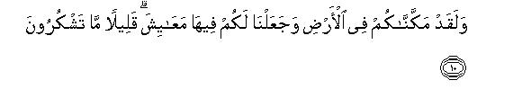
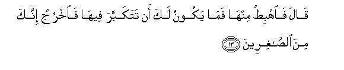
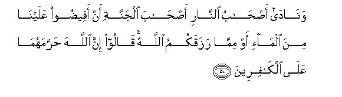
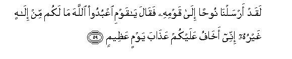
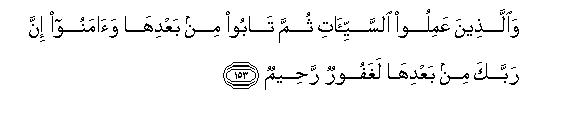
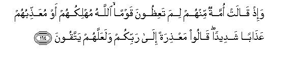

بسم الله الرحمن الرحيم
Sayyid Abul Ala Maududi - Tafhim al-Qur'an - The Meaning of the Qur'an
 7.
Surah Al Aaraf (The Heights)
7.
Surah Al Aaraf (The Heights)
This Surah takes its name from vv. 46-47 in which mention of A'araf occurs.
A study of its contents clearly shows that the period of its revelation is about the same as that of Al-An'am, i. e., the last year of the Holy Prophet's life at Makkah, but it cannot be asserted with certainty which of these two was sent down earlier. Anyhow the manner of its admonition clearly indicates that it belongs to the same period. As both have the same historical background the reader should keep in view the preface to Al-An'am.
The principal subject of this surah is "invitation to the Divine Message sent down to Muhammad" (Allah's peace be upon him), which is couched in a warning. This is because the Messenger had spent a long time in admonishing the people of Makkah without any tangible effect on them. Nay, they had turned a deaf ear to his message and become so obdurate and antagonistic that, in accordance with the Divine Design, the Messenger was going to be commanded to leave them and turn to other people,. That is why they are being admonished to accept the Message but, at the same time, they are being warned in strong terms of the consequences that followed the wrong attitude of the former people towards their Messengers. (Now that the Holy Prophet was going to" migrate from Makkah the concluding portion of the address has been directed towards the people of the Book with whom he was going to come into contact. This meant that the time of migration was coming near and the "invitation" was going to be extended to mankind in general, and was not to be confined to his own people in particular as before.
During the course of the address to the Jews, the consequences of their hypocritical conduct towards Prophethood have also been pointed out clearly, for they professed to believe in Prophet Moses but in practice opposed his teachings, disobeyed him and worshiped falsehood and consequently were afflicted with ignominy and disgrace.
At the end of the Surah, some instructions have been given to the Holy Prophet and his followers for carrying out the work of the propagation of Islam with wisdom. The most important of these is that they should show patience and exercise restraint in answer to the provocations of their opponents. Above all, they have been advised that under stress of the excitement of feeling, they should not take any wrung step that might harm their cause.
In this passage, the people have been invited to follow the Message sent down to them through Muhammad (Allah's peace be upon him) and warned of the consequences of its rejection. 1 - 10
The story of Adam has been related with a view to warning his descendants against the evil devices of Satan who is ever ready to mislead them as he did in the case of Adam and Eve. 11 - 25
This passage contains some Divine instructions, and contrasts these with Satan's instructions, and depicts a graphic picture of the results and the consequences of the two. 26 - 53
As the Message has been sent down by Allah (Who is the Creator of the heavens and the earth and everything in them), it should be followed, for it is like the rain He sends down to give life to the dead earth. 54 - 58
Events from the lives of some well-known Prophets - Noah, Hud, Salih, Lot, Shu`aib, Moses (Allah's peace be upon them all) -- have been related to show the consequences of the rejection of the Message, and the addressees of Prophet Muhammad (Allah's peace be upon him) have been admonished to accept and follow the Message in order to escape perdition. 59 - 171
As the Covenant with the Israelites was mentioned at the end of the preceding passage, the whole mankind has been reminded very appropriately of the Covenant that was made at the time of the appointment of Adam as the Vicegerent of Allah so that all of his descendants should remember it and accept and follow the Message that was delivered by the Holy Prophet. 172 - 174
The example of the one who had the knowledge of the Message but discarded it, has been cited as a warning to those who were treating the Message as false; they have been exhorted to use their faculties to recognize the Message; otherwise Hell would be there abode. 175 - 179
In this concluding portion of the Surah, some deviations of those who do not use their faculties properly to understand the Message have been dealt with and they have been admonished, reproved and warned of the serious consequences of their antagonistic attitude towards the Message of the Holy Prophet. 180 - 198
In conclusion, instructions have been given to the Holy Prophet, and through him to his followers, about the attitude they should adopt towards those who reject the Message and deviate from it. 199 - 206

In the name of Allah, the Compassionate, the Merciful.
[1-2] Alif. Lam. Mim Sad. This is a book which has been sent down to you:1 so, O Muhammad let there be no hesitation2 in your mind about it; this has been sent down that you may thereby warn (the disbelievers) and that it may be an admonition to the Believer.3
[3] O people, follow what has been sent down to you from your Lord and do not follow other patrons beside Him.4 But you seldom take admonition
[4-5] There leave been many habitations which We destroyed. Our scourge came upon them all of a sudden at night or at a time during the day where they were taking rest. When Our scourge overtook them, the only cry they could utter was "Indeed we were transgressors!"5

[6-9] Thus (on the day of Judgment) We will most certainly call to account6 all those to whom We sent Our Messengers, and We will also ask the Messengers (how far they conveyed the Message and how the people responded to it).7 Then We Ourself will recount to them with Knowledge (all their doings); for We were not absent from them. On dear Day the weight will be identical with the Truth:8 accordingly those whose scales will be heavy will alone come out successful. And those whose scales will be light will be the ones who will have incurred loss9 upon themselves because they had been unjust to Our Revelations.

[10] We established you on the earth entrusting you with power and providing you with sustenance, but you are seldom grateful.

[11-17] Indeed We planned your creation, then We shaped you, and there We said to the angels, "Bow yourselves before Adam"10 Accordingly all bowed save Iblis who did not join those who bowed themselves. Allah said. "What prevented you from bowing down, when I commanded you?"He replied. "I am better than he; Thou created me of fire and created him of clay."
Allah said. "Well, get down from here. You have no right to brag here of your greatness. Get out; indeed you are of those who wish themselves ignominy."11
Satan requested, "Give me respite till the Day when they shall all be raised from the dead."
Allah replied, "You are granted respite."
He said, "Well for that Thou hast led me into deviation, now I will also lie in ambush for mankind on Thy Right Way. I will come upon them from all sides-froth the front and from the rear, and from their right and from their left: then Thou wilt not find most of them to be grateful"12
[18-19] Allah said, "Get out from here-despised and disowned. Note it well that I will fill the Hell with you and with all those who will follow you. As for you, O Adam, you and your wife should dwell in this Paradise; you may eat of anything from anywhere, but do not even go near this tree or you shall become transgressors."
[20-25] Then Satan tempted them so that he might reveal to them their shameful parts which had been hidden froth each other. He said to them, "Your Lord has forbidden you to go near this tree only lest you should become angels or become immortals." He swore an oath and assured them, "I am your true well-wisher." Thus he beguiled them and gradually molded them to his design. So, when they tasted (the fruit of the tree, their shameful parts became visible to each other and they began to cover themselves with the leaves of the Garden.
Then their Lord called out to them, saying, "Did I not forbid you to go near this tree, and warn you that Satan was your open enemy?"
Both of them at once replied, "O Lord, we have wronged ourselves gravely; if You do not forgive us and have mercy upon us, we shall be totally ruined.”13
Allah commanded, "Go down;14 you are enemies to each other: the earth shall be a dwelling place for you for a fixed term and there you will get your livelihood". He added, "There you shall live and there you shall die and from there you shall be brought forth at last."
[26-27] O children of Adam,15 We have sent down to you clothing in order to cover the shameful parts of your body, and to serve as protection and decoration; and the best garment is the garment of piety. This is one of the signs of Allah; it may be the people learn a lesson from this. O children of Adam, let not Satan seduce you in the same way that he caused your first parents to be driven out of the Garden and stripped them of their garments in order to expose their shameful parts before each other. He and his party see you from where you cannot see them. We have made these satans the guardians of those who do not believe.16

[28-30] Whenever these people commit a shameful deed, they say. "We found our forefathers doing this, and Allah Himself has enjoined us to do this."17 Say to them, "Allah never enjoins a shameful thing.18 Do you attribute to Allah's name and say things which you know not to be from Him?" O Muhammad, say to them, "My Lord has enjoined justice and righteousness; (He has also enjoined that) you should keep aright your direction during every act of worship and invoke Him alone, dedicating your faith sincerely and exclusively to Him; you shall be created again just as He has created you now.19 He has shown the Right Way to some but has justly left others to go astray. This is because, instead of Allah, they have made satans their guardians, and yet think that they are on the Right Way."
[31] O children of Adam, dress yourselves fully, properly and decently at the time of every worship;20 eat and drink, but do not transgress, for Allah does not like the transgressors.21
[32] O Muhammad, ask them, "Who has forbidden22 the decent garments that Allah brought forth for His "servants and (Who has forbidden) the good and pure things of life bestowed by Him?" Say, "All these things are for the Believers in this world but on the Day of Resurrection, these shall be exclusively for them."23 Thus We make quite plain Our Revelations to those who possess knowledge.
[33] O Muhammad, say to them, "The things which my Lord has forbidden are: shameful deeds whether open or secret,24 sinful25 things and transgression against the Truth,26 He has also forbidden to associate partners with Allah since He has sent down no authority therefor; (He has also forbidden) to attribute to Allah's name the thing which you know not He has said."

[34-39] Every community has been given a fixed term; when the term expires, it can neither be put back nor put forward by a single hour.27 (Allah declared it clearly at the very beginning of human life, ) "O children of Adam! If Messengers from among you should come to you and recite to you My Revelations, whoever will refrain from disobedience and mend his ways, will have no cause of fear nor of sorrow; as for those who will treat Our Revelation as false and show pride in regard to them, shall be the dwellers of Hell, wherein they shall remain for ever."28 Then who can be more wicked than the one who invents falsehoods about Allah and then attributes these to Him or than the one who treats the true Revelations of Allah as false? Such people will go on receiving their destined shares29 till that hour comes when the angels, appointed by Us, will arrive to capture their souls. Then the angels will ask them, "Where are those now whom you worshiped instead of Allah ?" They will answer "All of them have forsaken us." And they will give evidence against themselves that they had indeed denied the truth. Allah will say, "Go into Hell, where those who went before you from among jinns and men have gone. " As each generation will be entering Hell it will curse its preceding generation till all generations shall be gathered there: then each succeeding generation will say regarding the preceding one, "O Lord, these were the people who led us astray; therefore give them double chastisement of the Fire." Allah will reply, "There is a double chastisement for every one but you know it not."30 And the preceding generation will say to the succeeding, "(If we were to blame) you, too, were no better than we. Now taste the torture for what you earned."31
[40-43] Believe it that the doors of heaven will not be opened for those who have treated Our Revelations as false and have shown pride in regard to them: their admission into Paradise is as impossible as the passing of the camel through the eye of the needle, so do We recompense the guilty ones. Hell shall be their bed and Hell shall be their covering: this is the chastisement We award to the workers of iniquity. But as to those who have believed in Our Revelations and done good deeds,- and in this way We lay not on anyone a burden beyond one's capacity-they are worthy of Paradise, wherein they will abide for ever. And We will remove whatever ill-feeling would have been in their hearts against one another;32 canals will be flowing underneath theta and they will say, "Praise be to Allah, Who has guided us to this Way: by ourselves we would not have been able to find the Way, if Allah had not guided us. The Messengers sent by our Lord had really come, with the Truth. " At that time a voice will be heard saying, "This is the Paradise, of which you have been made heirs; it has been given to you for the good works you did.33
[44-45] Then the inmates of Paradise will call out to the inmates of Hell, "We have found all the promises made to us by our Lord to be true: have you, too, found the promises trade to you by your Lord to be true?" They will say, "Yes". Then a herald in their midst will announce: "The curse of Allah be upon those evil-doers who debarred others from the Way of Allah and sought to make it crooked, and did not believe in the Hereafter."
[46-49] Between these two groups, there shall be a barrier, on `the Heights,' on which will be some other people, who will recognize everyone of them by his countenance. They will call out to the inmates of Paradise, "Peace be upon you! "-They will not have yet entered Paradise, though they will be expecting to do so.34-And when their eyes will be turned towards the inmates of Hell, they will say, "O our Lord, do not include us in these wicked people." Then these people on `the Heights' will recognize by their characteristics some `big' personalities from among the inmates of Hell and will call out to them, "You have seen that today neither your followers have availed you anything nor your wealth and property, of which you were very proud. And, are not these inmates of Paradise the same people about whom you swore that Allah would not give them any portion of His blessings? Today the same have been welcome with the words `Go into Paradise where you will have neither fear nor grief'."

[50-51] And the inmates of Hell will cry out to the inmates of Paradise: "Pour upon us a little water or throw down a bit of the provisions Allah has bestowed upon you." They will reply, "Allah has forbidden both the things to the disbelievers, who had made their religion a pastime, sport and enjoyment, and who had been deluded by the worldly life. Allah says. `Today We will forget them just as they forgot the meeting of this Day and rejected Our Revelations'."35
[52-53] We have brought to these people a Book which gives details based on knowledge36 and which is a guidance and blessing for those who believe.37 Now, are these people waiting for anything other than the consequence (of which they have been) warned in this Book?38 When the consequence will come before them, those very people who afore time had disregarded it, will say, "Indeed, the Messengers of our Lord had come with the Truth. Shall we have, then, any intercessors who will intercede for us? Or could we be sent back that we might do deeds different from those we did before?"39 They have, indeed, incurred heavy loss upon themselves and all the false things they had invented have forsaken them today.

[54-56] In fact, your Lord is Allah alone, Who created the heavens and the earth in six days,40 and then sat upon the Throne of His Kingdom;41 Who makes the night cover the day and then the day follows the night swiftly; Who created the sun, the moon and the stars, all of which are under His Command. Note it well: His is the creation and His the Sovereignty.42 Full of blessings is Allah, the Lord of the worlds.43 Invoke your Lord with humility and in secret; indeed He does not like the transgressors. Do not spread chaos on the earth after it has been set in order,44 and call your Lord with fear and with hope.45 Surely, the mercy of Allah is near to the righteous people.
[57-58] And it is Allah, Who sends winds as harbingers of the good tidings of His mercy; when they gather up heavy clouds He drives them on to some dead land, and makes the rain fall upon it and brings forth many kinds of fruit (from the same dead land). Look! This is how We bring forth the dead from the state of death; it may be that you learn a lesson from this observation. The soil which is rich, yields rich produce by Allah's permission and the soil which is poor yields nothing but poor produce.46 Thus We present Our Signs over and over again for those people who intend to be grateful.

[59-61] We sent Noah to his people;47 he said, "O my people, worship Allah; you have no deity other than He.48 I fear lest the chastisement befall you on a dreadful day." The chiefs of his people answered, "We clearly see that you are in obvious deviation." Noah replied, "O my people, I am not in any kind of deviation; on the contrary, I am a messenger from the Lord of the worlds."
[62-64] "I convey to you the Messages of my Lord and am your well-wisher for I know from Allah what you do not know. Do you think it strange that admonition from your Lord should come to you through a man from among your own people so that he may warn you and you may guard against error and be graced with mercy?"49 But they treated him as an impostor. Ultimately, We rescued Noah and those with him in the Ark and drowned those who rejected Our Revelations as false.50 Indeed they were a blind people!
[65-72] And to `Ad51 We sent their brother Hud: he said ,"O my people, worship Allah: you have no deity other than He. Will you not, then, refrain from wrong ways?" The chiefs of his people who rejected his Message, answered, "We clearly see that you are of unsound mind and we think that you are a liar." He replied, "O my people, I am not of unsound mind, but in fact, I am a Messenger from the Lord of the world. I convey the Message of my Lord to you and I am a trustworthy well-wisher of yours. Do you think it strange that admonition from your Lord should come to you through a man among your own people so that he may warn you? Do not forget that after Noah's people your Lord made you his successors and made you very robust. So remember the wonderful manifestations of Allah's power:52 it is expected that you will attain success." They replied, "Have you come to us (with the demand) that we should worship Allah alone and discard those whom our forefathers have been worshiping?53 Well, bring on us the scourge with which you have been threatening us, if you are truthful." To this, he replied, "You have already incurred the curse of Allah and His wrath. Do you dispute with me about mere names which you and your forefathers have invented,54 and for which Allah has sent down no authority?55 Well, you may wait and I, too, will wait with you." Ultimately, We saved Hud and his companions with Our Mercy, and We cut off the roots of those who treated Our Revelations as lies, and did not intend to believe.56
[73-74] And to Thamud,57 We sent their brother Salih. He said, "O my people, worship Allah for you have no other deity save Him. A clear proof has come to you from your Lord: here is Allah's she-camel, a sign58 for you, so let her graze at will in Allah's land; do not touch her with any evil intention, lest a woeful scourge from your Lord seize you. And remember the time when Allah made you successors of `Ad and established you in the land with dignity and enabled you to make castles on the plains and hew out houses in the hills.59 So do not be neglectful of the manifestations of Allah's powers, and do not spread disorder on the earth."60
[75-76] The chiefs of his tribe, who were full of pride, said to those who had believed from among the oppressed people, "Do you know it for certain that Salih is a Messenger from his Lord?" They replied, "Indeed we believe in the Message with which he has been sent." But those who had arrogant assumption of superiority said, "We deny that thing which you believe. "
[77-79] Then they killed the she-camel,61 and very insolently defied their Lord's command, and challenged Salih, "Bring that scourge with which you threaten us, if you really are one of the Messengers." Consequently a shocking catastrophe62 overtook them and they lay lifeless on their faces in their dwellings. So, Salih left their habitations, saying. "O my people! I conveyed the Message of my Lord to you and I did my very best for your good, but I am helpless because you do not like your well-wishers."

[80-84] And We sent Lot as a Messenger: Remember that he said to his people,63 "Have you become so shameless that you commit such indecent acts as no one committed before you in the world? You gratify your lust with men instead of women:64 indeed you are a people who are transgressors of all limits!" But the only answer of his people was no other than to say, "Turn out these people of your habitations for they pose to be very pious."65 At last We delivered Lot and the members of his household-except his wife, who was of those who stayed ' behind66 and We rained a rain upon his people67 then behold what happened in the end to the guilty ones!68
[85-86] And to Madyan69 We sen t their brother Shu`aib: he said, " O my people, worship Allah: you have no other deity than He. A clear guidance has come to you from your lord: you should, therefore, give full measure and weight, and do not defraud the people of their goods,70 nor spread disorder on the earth after it has been set aright:71 this is better for you, if you are true Believers.72 And do not lie in ambush by every path (of life) as robbers, in order to frighten the people nor debar from Allah's Way those who believe in it, nor seek to snake the Right Way crooked. Remember the time, when you were a few in number: then Allah multiplied you: and behold with open eyes what happened to the spreaders of corruption!
[87] If there are among you some who believe in the teachings with which I have been sent and there are others who believe not, wait and see till Allah judges between us, for He is the best of all judges.
[88-89] The chiefs of his tribe, who were puffed up with pride, said to him, "O Shu`aib, we will banish you and those who have believed with you from our city, or you shall have to return to our fold." Shu`aib replied,"What! Will you turn us back forcibly to it, even if we abhor it? We shall be guilty of attributing a lie to Allah, if we return to your creed, after Allah has delivered us from it; nor can we now return to your creed, except that Allah, our Lord, wills it;73 the knowledge of our Lord embraces everything; in Allah we put our trust, Our Lord, judge with truth between us and our people, and Thou art the best of judges."
[90-93] The chiefs of his tribe, who had rejected his Message, said to one another, "If you follow Shu`aib, you will be utterly ruined."74 It, however, so happened that a shocking catastrophe overtook them and they remained lying prostrate in their dwellings. Those who treated Shu`aib as an impostor were so wiped out as if they had never lived in those dwellings. Ultimately the very people, who treated Shu`aib as an impostor, were utterly ruined.75 Then Shu`aib left the place, saying, "O my people! I conveyed the Messages of my Lord to you and I did my best for you as your well-wisher. Now, how should I be grieved for the people who reject the Truth!"76

[94-99] Whenever We sent a Prophet to a habitation, We first afflicted its people with adversity and calamity so that they should humble themselves. Then We changed their adversity for good fortune till they became very prosperous and said, "Our forefathers also had their adversity and prosperity". At last We seized them all of a sudden when they were quite unaware.77 Had the people of the habitations believed and adopted the way of piety, We would have opened the doors of blessings from the heavens and the earth, but they denied the Truth; so We seized them for the evil they had earned. Do the people of the habitations now feel secure. that Our punishment will not come to them all of a sudden at night, while they might be fast asleep? Or, do they feel secure that Our punishment will not smite them all of a sudden during the day while they might be engaged in pastime? Are these people not afraid of Allah's secret plan?78 In fact, only those people are doomed to destruction, who are not afraid of Allah's secret plan.
[100-102] And, have not those people, who inherit the earth after its former occupants, learned a lesson from the fact that, if We please, We can seize them for their sins?79 (But they neglect the realities that teach a lesson) and We seal their hearts: then they do not listen to anything.80 These people whose stories We recount to you (can serve as examples to you). Their Messengers came to them with clear Signs, but they would not believe in what they had once denied. Behold, this is how We seal the hearts of the disbelievers.81 And We found in most of them no respect for any Covenant; nay, We found that most of them were transgressors.82

[103] Then after the (above mentioned) communities, We sent Moses with Our Signs to Pharaoh and the chiefs of his nation,83 but they also treated Our Signs unjustly.84 Then behold, what happened in the end to the mischief-makers.
[104-105] Moses said, "O Pharaoh!85 I am a Messenger from the Lord of the universe. It behooves me to say in the name of Allah nothing but the truth. I have come to you from your Lord with clear Signs of my appointment: so send the children of Israel with me."86
[106] Pharaoh answered, "If you have brought a Sign, and, if what you say is true, produce it"
[107-108] Thereupon, Moses threw down his staff, and behold, it became a real serpent all of a sudden. Then he drew his hand out of his pocket, and lo, it was shining before the beholders!87
[109-116] At this the chiefs of Pharaoh's people said to one another, "Indeed this man is an expert magician. He intends to drive you out of your land;88 now what do you propose to do?" Then they all advised Pharaoh: "Put him and his brother off for a while, and send heralds to all the cities so that they should bring to you every expert magician".89 Accordingly, the magicians came to Pharaoh and said, "Shall we surely get great magic. Our reward, if we win ?" Pharaoh answered, "Yes, indeed, and you shall get a position close to me"
Then they said to Moses, "Will you throw down first, or should we throw down?" Moses answered, "You should throw down first".
When they threw down their devices, they bewitched the eyes of the people and terrified their hearts: for they had, indeed, produced a great magic.
[117] Then We inspired Moses to throw down his staff. No sooner did he throw it down than it began to swallow their false magic.90
[118-122] Thus the Truth was established, and the falsehood which they had wrought proved vain. Pharaoh and his people were vanquished in the combat and (instead of being triumphant) they became humiliated. As regards the magicians, they were compelled to fall prostrate by something from within. hey said, "We have acknowledged the Lord of the worlds,- the Lord whom Moses and Aaron acknowledge."91
[123-124] Pharaoh said, "Do you dare believe in Him before I permit you? Indeed, it was a plot you conspired in the capital to deprive the rightful owners of their power. Well, you shall soon know its consequences. I will have your hands and feet cut off on opposite sides and then will I have you all crucified."
[125-126] They answered, "At any rate, we have to return to our Lord; (as for you,) you want to take vengeance upon us only because we believed in the Signs of our Lord, when they came before us. O our Lord, bestow fortitude upon us, causing us to die as those who have surrendered to Thee".92
[127] Then the chiefs of Pharaoh's nation said to him, "Will you leave Moses and his people free to spread disorder in the land, and let them discard your service and that of your deities?" Pharaoh answered, "Well, I will have their sons slain and let their women live:93 we have a strong hold over them."
[128-129] Moses said to his people, "Invoke Allah's help, and show fortitude. The land belongs to Allah. He gives it as a heritage to those of His servants whom He pleases: and the final success is for those who fear Him in all their doings." His people answered, "We were oppressed before you came to us and now also we are being oppressed since you have come to us." He said, "In the near future, your Lord will destroy your enemies, and make you vicegerents in this land; then He will see how you conduct yourselves. "
[130-134] Indeed We afflicted Pharaoh's people with several years of famine and scarcity of food so that they should come to their senses. But they responded like this: whenever a good time came; they would say, "This is but our due" and when there was a hard time, they would ascribe their calamities to Moses and those with him. Whereas, in fact, their misfortune was in the hand of Allah; but most of them did not know this. They said to Moses, "We are not going to believe in you, whatever Sign you may bring to enchant us."94 At last We let loose upon them the storm,95 the locusts, the lice,96 and the frogs, and rained blood upon them. Though We showed these Signs, one by one, they persisted in their rebellion; for they were steeped in crime. Whenever a plague befell them, they would say, "O Moses! Pray for us to Allah in the name of the office you hold from Him. If you help remove the plague from us this time, we will believe in you, and send the Israelites with you."

[135-137] But as soon as We removed the plague from them after the expiry of the term that had been fixed for them, they would at once break their promise. Then We took Our vengeance on them and drowned them in the sea because they had treated Our Signs as false and had grown heedless of them. And after them We gave as heritage to those who had been abased and kept low, the eastern and western parts of that land, which had been blessed bountifully by Us.97 Thus the promise of prosperity that your Lord had made with the Israelites was fulfilled, because they had shown fortitude. And We destroyed all that Pharaoh and his people had constructed and raised up.
[138-141] We led the Israelites across the sea; then they started on their journey, and came upon a people who were zealously devoted to their idols. They said, "O Moses, make a god also for us like the gods these people have."98 Moses replied "Indeed, you are a people who are behaving very foolishly. The way these people are following is doomed to destruction and the works they are performing are absolutely vain. " Then he further said, "What! should I seek a god for you other than Allah: when it is He Who has exalted you above all the nations of the world? And (Allah says), "Recall the time when We rescued you from the people of Pharaoh, who afflicted you with a dreadful torment; they slew your sons and let your women live and in this was a great trial for you from your Lord!"
[142-144] We summoned Moses to Mount Sinai for thirty nights and days, and We added to them ten, thus the term appointed by his Lord became full forty nights and days.99 Before leaving, Moses said to his brother Aaron, "After me take my place among my people and do the right, and do not follow the way of the mischief-makers."100 When Moses arrived there at the appointed time and his Lord spoke with him, he beseeched, "Lord, give me power of sight so that I may look upon Thee. " He answered, "You cannot see Me. Well, you may just look towards the yonder Mountain; if it remains firm in its place, then you shall behold Me." Accordingly, when his Lord manifested His glory on the Mountain; that turned it into fine dust, and Moses fell in a swoon. when he came to himself, he said, "Glory be to thee! I repent before Thee, and I am the first of those who believe." He said, "O Moses! I have chosen you from among all the people to deliver My Message and to have conversation with Me: so take whatever I give you and be grateful."
[145-147] After this, We inscribed upon the tablets101 admonitions concerning every branch of life and clear instructions about all its aspects and gave these to Moses and said to him, "Hold fast to the precepts steadfastly, and enjoin your people to follow them according to their best sense.102 In the near future, I shall show you the abode of the wicked people.'103 I will turn away from My Signs the eyes of those who without any sight behave haughtily on the earth.104 Whatsoever Sign they might see they will never believe in it. If they see the Right Way before them, they will not follow it; but if they see a crooked way, they will follow it. That is because they treated Our Signs as false and were heedless of them. Whoever treated Our Signs as false and denied the meeting in the Hereafter their deeds became vain.105 Can the people get any recompense except according to what they have wrought?"



[148-153] In his absence106 the people of Moses made from their ornaments the image of a calf which made sound like lowing. Did they not see that it could neither speak to them nor guide them in any matter? Yet they took it for a god, for they were wrong-doers.107 But when the enchantment of self delusion was broken and they realized that they had, in fact, gone astray, they said, "If our Lord does not have mercy on us and does not forgive us we shall be losers." In the meanwhile when Moses full of anger and sorrow returned to his people, he said, "Very evil is it that you have done in my place after me! Could you not patiently wait for the Commandment of Allah?" And he threw down the tablets, and, seizing his brother by the hair of his head, dragged him. Aaron said, "Son of my mother, these people overpowered me and were going to kill me: so, let not the enemies gloat over me: do not count me among the people who have done wrong."108 Then Moses said, "O Lord, forgive me and my brother, and admit us to Thy mercy; Thou art the Most Merciful of all." (In response to this Allah said,) "Allah's wrath shall surely overtake those who made the calf a god, and they shall be abased in the life of this world, that is how We punish those who invent falsehood. But those who do evil deeds, then repent after this and believe, will after this repentance and belief most surely find your Lord Forgiving and Merciful."
[154-156] When Moses' anger was allayed, he took up the tablets in whose writing was guidance and mercy for those who fear their Lord. And Moses chose from among his people seventy men (to accompany hall) to attend a meeting appointed by Us.109 When a severe earthquake seized them, Moses prayed, "My Lord, if Thou hadst willed, Thou could have destroyed them and me before this: wouldst Thou destroy rill of us for the offense committed by some foolish people from among us? This was a trial set by Thee, whereby Thou leads astray whom Thou wilt and guides whom Thou wilt.110 Thou alone art our Protector; so forgive us and have mercy on us for Thou art the best of all forgivers! And ordain for us what is good in this world as well as in the world to come; we have turned to Thee". He replied, "As to punishment, I inflict it on anyone I will, but My mercy embraces everything.111 So I will prescribe it for those who will refrain from disobedience, pay the Zakat, and believe in My Revelations."
[157-158] (So. now mercy has been assigned to those) who follow this Messenger, the Ummi Prophet112 whose mention they shall find in the Torah and the Gospel with them.113 He enjoins them to follow virtue and forbids them from evil: he makes pure things lawful for them and impure things unlawful.114 He relieves them of their burdens and frees there from the shackles that bound them.115 For this reason those alone who believe in him and support hire and succor him and follow the light that has been sent down with him, shall attain "success". O Muhammad, say, "O mankind, I am a Messenger to all of you from Allah to Whom belongs the kingdom of the heavens and tire earth. There is no deity but He. He bestows life and ordains death. So believe in Allah and His Messenger, the Ummi Prophet, who believes in Allah and His Commandments. Follow him: it is expected that you will be guided aright."
[159-160] Among,116 the people of Moses there were some who guided (others) with tire Truth and judged the affairs with the Truth.117 And We had divided them into twelve clams and made them distinct Communities.118 When his people asked him tar water. We inspired Moses to strike a certain rack with his staff. Consequently, twelve springs gushed forth from it and each community specified its drinking place: We caused the cloud to cast shadow over them, and We sent down manna and salva for their food.119 saying. "Eat of the clean and pure things We have provided for you." However, by doing what they did afterwards, they did no wrong to Us but they wronged themselves.
[161-162] And120 call to mind the time when it was said to them, "Go and dwell in this town, and get therefrom provision for yourselves out of its produce, according to your liking, and say "hittatun, hittatun," and enter the gate of the town, bowing down with humility. We shall pardon your sins and increase all the more the rewards of the doers of good" . But those from among them who were bent on wrongdoing changed that word which had been said to them. Consequently, We sent down scourge upon them121 from heaven because of the wrongs they were doing.

[163-166] And ask them about the township which was situated on the sea shore.122 Remind them of what befell its people who used to break the Sabbath (Saturday). Each Sabbath-day the fish appeared in abundance before them on the surface of the water123 but did not appear at all on other days than Sabbath. This was because We were putting them to test on account of the acts of disobedience they did.124 Also remind them that when some people from among them asked the others the answer that was given by some of them, "Why do you admonish those people whom Allah is about to destroy or punish severely?" they replied, "We admonish them in order to be able to offer an excuse before your Lord and we also hope that they might refrain from disobedience to Him." However, when they totally forgot the teachings they were reminded of, We saved those who used to forbid evil, and seized with a severe scourge all others who were transgressors, because of the acts of disobedience they did.125 But when even after this they disdainfully persisted in that from which they were forbidden, We said to them, "Become apes-- despised and disgraced!"126
[167] And recall the time when your Lord declared,127 "I will set over the Israelites over and over again up to the Day of Resurrection, people who should inflict upon them the severest torment."128 Your Lord, indeed, is swift in retribution, and He is indeed also Forgiving and Merciful.
[168-170] And We divided them into many separate communities all over the earth: some of these people were righteous and some of them were different from this: We tested them with prosperity and with adversity so that they might turn back. Then after the following generations, unworthy people succeeded them: they inherited the Book, but in spite of this they grab the fleeting good things of this low world, and say. "We expect to be forgiven." Yet if similar worldly things again come before them. they again grab them.129 Has not the Covenant of the Book been taken from them that they should ascribe to Allah nothing but the truth? And they themselves have studied well that which is written in the Book.130 And the abode of the Hereafter is better for those who fear Allah.131 Do you not understand even this thing? As for those who strictly observe the Book and establish Salat, surely We will not let go waste the reward of such righteous people.

[171] Do they also remember the time when We shook the Mountain and spread over them as though it were an umbrella, and they thought that it was going to fall upon them; (then We said to them), "Hold fast the Book We are giving you, and keep in mind what it contains: it is expected that you will refrain from wrong ways."132
[172-174] And, O Prophet,133 remind the people of the time, when your Lord brought forth from the loins of the Children of Adam, their descendants and made them bear witness about themselves. He asked them, "Am I not your Lord?" They replied, "Most certainly, Thou alone art our Lord; we bear witness to this. "134 This We did lest you should say on the Day of Resurrection, "We were unaware of this thing," or lest you should say, "Our forefathers started the practice of shirk before us and we were born after them to their descendants: dost Thou. then, punish us for the sin that was committed by the wrongdoers?"135 Behold, this is how We make Our Signs clear136 so that these people return to the right way.137
[175-176] And, O Muhammad, relate to them the story of the person whom We had given the knowledge of Our Revelations,138 but he turned away from their observance. Then Satan pursued him until he became one of those who had gone astray. If We had willed We would have exalted him by means of those revelations, but he clung on to the earth and followed his own lusts. Therefore he began to behave like a dog: it lolls out its tongue if you chase it away and it lolls out its tongue if you leave it alone.139 Such is the likeness of those who treat Our Revelations as false.
[177-179] You should go on relating these stories to them: it may be that they consider them seriously. Very bad is the example of those who treated Our Revelations as false and they have been doing wrong to their own selves. Only he whom Allah guides is rightly guided, and they whom Allah deprives of His guidance become losers. And this is a tact that there are many jinns and human beings whom We Dave created (as if) for Hell.140 they have hearts but they do not think with them; they have eyes but they do not see with them; they have ears but they do not Hear with them. They are like animals; nay.,even worse, for they are the people who have become utterly heedless.

[180-183] Allah is entitled to most excellent names:141 so call Him by excellent names only and leave alone those who deviate froth the Truth in giving names to Him; they shall be recompensed for what they have been doing.142 From among those We have created, there are some who guide with the truth and do justice therewith. As regards those who have treated Our Revelations as false, We will gradually lead them on to ruin in a way they will not know. Though I am giving them a respite, My plan is infallible.
[184-186] And have they never reflected on this matter? There is no tinge of unsoundness of mind in their companion; he is a Warner, who is warning plainly (beforehand of the evil consequence). Have they never considered the functioning of the heavens and the earth, and have they never observed closely anything that Allah has created?143 And has it never occurred to them that their life might have come near to its end?144 Then what else can there be in which they will believe after this warning of the Messenger? Whomever Allah deprives of guidance has no guide, for Allah leaves such people wandering about blindly in their contumacy.
[187-188] These people ask you: "Well, when is the Hour of Resurrection coming?" Say, "Its knowledge is with my Lord alone: He Himself will disclose it at the proper time: that Hour will weigh heavily on the heavens and the earth. It will come on you all of a sudden. " They ask you about it as though you have been in search for it. Say; "Its knowledge is with Allah alone, but most of the people do not know this. " Tell them, O Muhammad, "I have not the power to bring any good to or avert any harm from myself: only that happens which Allah wills. Had I the knowledge of the unseen, I would have acquired many benefits for myself and would never have suffered any harm.145 I am merely a Warner, and a bearer of good news to those who believe in what I say."
[189-195] It is Allah Who created you from one being, and of the same species He made his mate, so that he may have a tranquil life with her. Then when a man covered a woman, she bore a light burden with which she moved about. But when she became heavy with it, both of them prayed together to Allah, their Lord: "If Thou givest us a sound child, we will be grateful to Thee. " But when Allah gave them a child of sound body and sound mind, they both began to associate partners with Allah in His favor, but Allah is exalted far above what they associate with Him.146 How foolish are these people! They associate with Him partners who do not create anything but are themselves created, who cannot help them nor have power to help themselves. If you invite them to follow the Right Way, they will not follow you; it will be all the same for you whether you call them or keep silent.147 Those whom you invoke besides Allah are mere servants of Allah like you: just invoke them, and, if what you say of them be true, they will answer your prayers. Have they feet that they should walk with them? Or have they hands that they should hold with them? Or have they eyes that they should see with them? Or have they ears that they should hear with them?148 Tell them, O Muhammad. "Call up the partners you have set up; then all of you sit down together and plot against me and give me no respite."
[196-198] My Protector and Helper is Allah who has sent down this Book, and Who protects the righteous people.149 On the contrary, those whom you call beside Allah, cannot help you nor can they help themselves. Nay, if you call them to the Right Way, they cannot even hear what you say; though it would appear to you that they are looking at you, in fact, they do not see anything."
[199-202] O Prophet, adopt the way of leniency and forbearance; enjoin what is good and avoid useless discussions with the ignorant people. If Satan ever excites you to anger, seek refuge in Allah: He is All-Hearing, All-Knowing. The fact is that if ever an evil suggestion from Satan so much as touches those, who are God fearing people, they immediately get alerted and clearly see the right course they should adopt. As regards their (that is, Satan's) brethren,149a they drag theta on and on in their crooked ways and leave nothing undone to seduce them.150
[203-204] O Prophet, when you do not show them a Sign (miracle), they say, "Why have you not chosen a sign for yourself?"151 Tell them "I follow only the Revelation, which my Lord has sent down to me: this contains lights of insight from your Lord, and is guidance and mercy for those who believe in this.152 When the Qur'an is recited to you. listen to it with attention and keep silence: it tray be that you also are blessed with mercy."153
[205-206] O Prophet, remember your Lord morning and evening, deep in your heart with humility and with fear, and also in a low voice with your tongue: do not be of those who are heedless.154 Indeed the angels, who are near to your Lord in rank, do not turn away in pride from His service.155 They glorify Him.156 and bow down before Him.157
1Here by `book' is meant this Surah, Al-A`araff.
2That is, "Convey this to the people without any fear and hesitation and without minding in the least how the opponents react to it. Let them be offended, let them ridicule, let them talk derisively and let them show more and snore enmity, if they like, but you should deliver the Message and propagate it without any fear and hesitation. "
Literally, the Arabic word harajun (translated into hesitation) means a thick bush, through which it is hard to pass. Figuratively the Text will mean, "There should be no indecision, doubt or unwillingness in your mind in the face of opposition and obstacles about proceeding further on the way of your Mission". The same thing has been expressed in XV: 97: "O Muhammad, We know that you feel depressed in your heart by what they say (against your Mission)", and in XI: 12 " .... lest you should leave out a part of what is being revealed to you and be depressed in your heart by the fear that they should say, in answer to your invitation, 'Why has no treasure been sent down to him and why has no angel come along with him'?"
3It means that the main object of this Surah is to warn people of the consequences of the rejection of the Message of the Prophet and to rouse the neglectful. Incidentally it also reminds the Believers of the implications of the Message while administering a warning to the disbelievers.
4This is the main theme of this Surah. It invites the people to accept the Guidance that has been sent down by Allah through His Messengers, for this alone can impart the true knowledge to man about himself and the universe, and tell him the aim and object of his life and teach him the principles on which to build his morality, social life, culture and civilization. Man should acknowledge Allah alone as his Guide and follow only His Guidance that has been sent down through His Messengers. 'The discourse warns that it is basically wrong to turn to anyone other than Allah for guidance, for this has always resulted in utter ruin and will inevitably lead to ruin.
Here the word "patrons" has been used for all those beings whom a man follows instead of Allah, whether he praises them as saints or curses them as satans. (For further explanation see E.N. 6 of XLII).
5That is, "You can learn a lesson from those communities that discarded the Guidance of Allah and followed the guidance of others, and consequently became so degenerate as to be a curse for the earth, which was cleansed of their filth by a scourge of Allah."
The words "Indeed we were transgressors" have been cited here to serve as a warning about two things. First, "It is absolutely useless to be sorry for and to confess one's error after the expiry of the term of respite given for its recompense." It is obvious that the individual and the community show utter lack of sense, if they waste the period of respite in negligence and turn a deaf ear to the warning and admonition of those who invite them to the Truth, and realize the horror of their conduct only when the scourge of Allah overtakes them. Secondly, "You yourselves have seen so many instances of individuals and communities. who were suddenly overtaken by the scourge of Allah, when they transgressed the bounds and reached the end of the term of their respite. You have also seen that after the scourge came upon them, there was no way of escape from it. When this has been the repeated verdict of history, why should a man repeat the same error over and over again, and wait for the ultimate end to offer repentance, when it cannot benefit in the least and can produce only grief and regret?
6The repeated occurrence of scourge in v. 3 is a conclusive proof of the fact that people will be called to account in the Hereafter, because in this life full punishment is not possible for the crimes committed by wicked individuals and communities. Here it comes merely to put a stop to their further crimes, just as a criminal at large is arrested and deprived of the opportunity for committing further iniquities. The real punishment will be in the Hereafter. The numerous instances of scourge in human history are a clear proof of the fact that man has not been left free to do what he likes. There is the Sovereign above him Who allows him to transgress only up to a certain limit and before he reaches that limit, administers warnings one after the other so that he may give up his wicked ways. But if he does not pay heed, then he is all of a sudden overpowered by a scourge that puts an end to his nefarious activities. If we consider the matter seriously in the light of these inevitable occurrences, we will come to the conclusion that the Sovereign of the universe has most surely appointed a time for calling to account those criminals and doing full justice to them. As the warning in this verse (6) is based on the preceding verses (4-5), it begins with "so" to show that this is a sequel to vv. 4-5.
7This shows that Prophethood will be the sole criterion of judgment in the Hereafter. On the one hand, the Messengers will be asked about what they did in conveying the Message to mankind; on the other, those to whom the Message was sent, shall be questioned regarding their response to it. As regards the individuals or communities to whom the Message did not reach, the Qur'an is silent as to the criterion by which they will be judged and there is no need for us to probe into this because Allah Himself has not deemed it necessary. But in regard to those individuals and communities who have received the Message, the Qur'an is quite explicit that they shall be unable to put forward any excuse whatsoever for their disbelief and rejection, their evil deeds and disobedience, and they will be wringing their hands when they shall be driven to Hell with ignominy.
8"On that Day weight will be identical with the Truth". On the Day of Judgment in the just scales of Allah, nothing but Truth will have any weight and vice versa; all that will have weight will be nothing but Truth. The weight of one will increase or decrease in proportion to the Truth one will have with oneself and that one will be judged solely by the measure of that weight and by nothing else. The life of falsehood, irrespective of its longevity and apparent grand deeds, will have absolutely no weight in those scales of justice. When the deeds of the worshipers of falsehood will be weighed in these scales, they will see with their own eyes that the `grand' deeds of their lives have no weight at all. This thing has also been states in v v. 103-105 in Surah Al-Kahf "Those who spent all their endeavors in wrong ways during their life in the world with the presumption that what they were doing was all right, are the losers. These are the people who disbelieved in the Revelations of their Lord and their meeting with Him. Therefore all their deeds have got lost; so We will cause these to lose weight on the Day of Resurrection."
9In other words, all human deeds will be divided into two categories, the positive and the negative. To know the Truth, to acknowledge it, to follow it and to exert in its cause, will be on the positive side; for in the Hereafter these alone will have any weight and value. On the contrary, to neglect the truth or to reject it or to tallow one's lusts or other human beings or satans or to exert in the way of falsehood. will be on the negative side. The deeds on this side will not only be valueless in themselves but will also decrease the weight of the positive deeds.
From the above it is quite obvious that success in the Hereafter will depend entirely on this that a man's good deeds should outweigh his evil deeds. The case of the one whose evil deeds far outweigh the good deeds, will be like that of a bankrupt who gives away all his possessions to pay off his debts but still has some outstanding liabilities.
10Please see also vv. 30-36, Al-Baqarah, for comparison.
The wording of v. 34, Al-Baqarah, might have given rise to the doubt that the command given to the angels to bow before Adam was meant for the person of Adam, but the wording of this verse clears that doubt. Here the words preceding the Command show that the angels were to bow before Adam as representative of the whole of mankind.
As regards the creation of mankind, first of all, Allah made a plan for it; then He got ready the necessary material for this purpose; then He gave it the human shape, and when Adam carne into being in the shape of a living man, then the angels were commanded to bow before him, who was the representative of the whole human race.
The above explanation of the verse is based on some other passages of the Qur'an. For instance, let us examine vv. 71-72 of Surah sad:
"Just recall the time when your Lord said to the angels, 'I am going to create a man of clay when I perfect it in every way, and blow into it of My Spirit, all of you should bow down before hire'."
Here, too, the same three stages, the creation, the perfection and bringing to life, have been mentioned in a different way. First of all, a man of clay was created, then he was given a shape and proportionate limbs and faculties and then he was brought to life as Adam by the blowing of His Spirit into it.
Let us also examine vv. 28-29 of Al-Hijra
"Just recall the time when your Lord said to the angels, 'I am going to create a man out of clay of molded mud W hen I perfect it in every way and blow into it of My Spirit, then all of you should bow down before hint' . "
It is very difficult for us to understand the exact nature of the creation of the first man, for we cannot comprehend fully how man was made from the material of the earth, how he was shaped and perfected and how the Spirit was blown into him. However, it is quite clear that the story of man's creation as stated in the Qur'an is quite different from Darwinism. According to this doctrine, the evolution of man has taken place from a non-human and semi-human state by a continuous process of elimination, selection and adaptation, and in this there is no line of demarcation to denote the end of the non-human state and the beginning of the species of `man' as such. On the contrary, the Qur'an says that man started his life as man; that in the entire history he has absolutely no connection whatsoever with any non-human state. Allah created him as man from the very first day of his life on the earth and endowed him with wisdom and enlightenment from the very start of iris life.
The above two points of view of the story of man lead to two opposite conceptions in regard to man. The adoption of the Darwinian conception reduces man to one of the species of animals: therefore all the principles of human life (including the moral principles) will be based on the principles governing animal life and any animal-like behavior of his will be regarded as natural. Then the only difference between human beings and animals will be the ability of the former to make use of instruments for the provision of their necessities and luxuries. On the contrary, the adoption of the Divine conception raises him from the low position of animal to the high position of man, His noblest creation. Then he is no longer a mere talking animal or a social animal but the vicegerent of Allah on this earth. Then what will distinguish him from all other creatures will not be his faculty of speech and his social life, but his moral responsibilities and the trust of the power delegated to him by Allah and his accountability for these to Him. This will change man's entire outlook about his life on this earth and will demand a different philosophy of life and system of morality, law and civilization. Then man will, of his own accord, look upwards in search of the principles of life and not downwards.
Now let us consider an objection to the Divine conception of man howsoever high sounding this may be from the moral and psychological points of view: how can we reject the scientific Darwinian conception merely on this account? In answer to this, we put a counter question: has the Darwinian theory of the `Origin of Species' been scientifically proved? Only those people who have a cursory knowledge of science may be suffering from this misunderstanding that the theory of evolution has been scientifically proved to be true, but the majority of the scientists know that it is merely a theory in spite of its high-sounding technical terms, and that the arguments in favor of this are not conclusive, but merely hypothetical. The most that can be said in this connection is that both the theories of the creation of the species may be equally possible. Their creation might have taken place according to the Darwinian theory of evolution, or each of the species might have been brought into existence individually.
11That is, "It is obvious that you invite your own disgrace because you have formed too high an opinion of yourself, though you are merely a creation and a servant of your Lord. You have arrogantly disobeyed the Command of your Creator, thinking it to be below your dignity. The mere fact that you have shown pride, conceit and haughtiness without airy personal claim or title to any excellence of your own, cannot make you great and respectable. It will make you mean, low and disgraceful and you yourself will be responsible for this ignominy . "
12This (vv. 16-17) is the challenge that was given by Satan to Allah. It. means, "During the respite Thou hast granted me till the Day of Resurrection, I will exert my utmost to show that man does not deserve the superiority Thou hast bestowed upon him over me. I will show how ungrateful, thankless and disloyal he is!
The respite that was asked by Satan and granted by Allah was not merely for time but also for opportunity to do what he intended (to do). What he meant was that he should be given the opportunity for exploiting man's weaknesses to prove that he was unfit for the viceregency. Allah granted his request and this has been elaborated in XVII: 61-65. According to this Allah granted leave to Satan to do whatever he liked to mislead Adam and his offspring from the Right Way. He was allowed to practice whatever devices he thought to misguide man. In short, all the ways would remain open for him to mislead men with this proviso: "Indeed you shall have no power over My servants." (XVII: 65). This means, "You will be allowed to make attempts to involve them in misunderstandings and allure them by false hopes, and by making evil look fair to them, and to invite them to evil ways by the allurements of lusts and vain hopes. But you shall gave neither any power to force them to your ways nor to prevent them from following the Right Way, if they intend to follow it." The same thing has also been stated in XIV: 22: "When on (the Day of) Resurrection, Allah will pass His judgment on His followers, Satan will say to them, `I had no power to force you to follow me. The only thing I did was to invite you to my way; therefore do not blame me now, but blame yourselves . . . . ' . "
Now let us consider the charge of Satan against Allah: "Thou hast involved me in deviation." What he meant was this: "You are responsible for my deviation for You commanded me to bow down before Adam, who is inferior to me in position. As this has injured my self-respect, I have disobeyed You. " It is obvious that Satan desired that Allah ought not to have exposed the feelings of pride and rebellion he was nurturing in his heart but ought to have let him go unchecked on the way he was going. As his charge was absurd, Allah did not take any notice of it.
13In this story the Qur'an has brought to light the following important facts:
(1) The feelings of shyness and modesty are natural and instinctive. Their first expression is the natural shyness one feels in exposing one's shameful parts before anyone else. The Qur'an tells us that this shyness has not been artificially created in man by the evolution of civilization nor has it been acquired by him as has been asserted by some disciples of Satan. This is an instinct that has been inherent in man from the first day of his creation.
(2) The sex instinct is the greatest weakness of the human race. That is catty Satan selected this weak spot for his attack on the adversary and devised the scheme to strike at their modesty. Therefore, the first step he took in this direction was to expose their nakedness to them so as to open the door of indecency before them and beguile them into sexuality. Even to this day, Satan and his disciples are adopting the same scheme of depriving the woman of the feelings of modesty and shyness, and they cannot think of any scheme of `progress' unless they expose and exhibit the woman to all and sundry.
(3) It is human nature not to accept easily an open invitation to wickedness. That is why every Satan has to pose as a sincere well-wisher of man in order to entangle him in his snare.
(4) Man has a great natural yearning for a higher position than the existing one, or for obtaining immortality. That is why Satan succeeded in beguiling them by offering to make them angels or immortals. Even now he first tempts man by the allurements of a higher position and a better condition, and then leads him to follow the way that throws him into the abyss of degeneration.
(5) The Qur'an refutes the commonly known version that Satan first beguiled Eve and then used her to mislead Adam. It says that Satan beguiled both of them and both of them were deceived. Though the difference between. the two versions appears to be trivial, yet a careful appraisal of the two will show that they have far-reaching implications. The first version played a great part in degrading woman morally, legally and socially, whereas the Quranic version has helped raise the status of woman to a high level.
(6) This story makes it, quite clear that whenever man disobeys Allah, he is exposed sooner or later. The nakedness of Adam and Eve became visible because they disobeyed the command of Allah, and not because of any inherent quality of the forbidden tree: At first Allah had made His own special arrangement to cover their nakedness, but when they disobeyed Him by eating the forbidden fruit, He undid that arrangement and they were left to themselves to cover themselves in their own way, if they so desired. And if they had no intention of covering themselves, or if they did not do anything in this connection, Allah did not care at all about the condition in which they moved about. This meant to show that Allah would help them only if they remained obedient to Him. As soon as they would transgress the bounds of His obedience, He would withdraw His protection and leave them to do whatever they liked. The Holy Prophet also stated the same thing in several Traditions. He used to pray, "O my Allah. I expect Mercy from Thee: so do not leave me to myself even for a moment" .
(7) In his conflict with man, Satan wanted to prove that man was not superior to him in any way. So he beguiled him to eat the forbidden fruit. Though Satan was successful in beguiling him into disobeying his Lord, yet on the whole man proved his moral. superiority over Satan. (a) Satan exhibited pride by claiming to be superior to man, but man did not put up such a claim. (b) Satan disobeyed Allah solely because of his pride without any external temptation. On the contrary, man did not commit disobedience because he intended it, but he was beguiled into it by Satan, who approached in the guise of a well-wisher. Even then, he was misled because he imagined that he was going towards a higher position. (c) When Satan was warned of his sin, he did not confess it nor return to the way of obedience, but became all the more obdurate. On the contrary, when man was warned of his sin, he did not show obduracy, nor arrogance; but felt ashamed and sorry; he confessed it, turned to the way of obedience to his Lord and begged His forgiveness in order to seek His blessing.
(8) This story has been related here mainly to teach the lesson that the right course for the offspring of Adam is to follow His way and not that of Satan. The Satan's way has been clearly made distinct from Adam's way. It is to turn away from Allah's obedience and to adopt the way of rebellion against Him and to persist in it with pride in spite of warning, and to beguile into disobedience those who are treading the path of obedience. Therefore the Right Way for man is to fight against satanic deceptions and to understand and counteract his cunning devices and to be ever on the guard to protect himself from his evil designs, and to repent, if, in spite of all his precautions; he sometimes falls a victim to Satan and disobeys his Allah. He should, then, confess it, feel sorry for it and be ashamed of it and turn to Allah and make amends for it.
It also meant to warn the people who were opposing the Holy Prophet, as if to say, "The way you are following is the way of Satan, who has made you swerve from the Right Way. The very fact that you have made the satans from among the jinns and mankind your patrons and that you are persisting in your error, in spite of repeated warnings, shows that you have fallen a victim to your open and permanent enemy. As you are going to be utterly ruined by him and meeting with the same consequences that are in store for Satan, if you are not your own enemies, and if you have any common-sense left in you, you should take a warning and turn to the way of your first parents., Adam and Eve, and repent. "
14The words "Go down" should not give rise to the misunderstanding that they were exiled from Paradise as a punishment for their disobedience. The Qur'an has at several places declared clearly that Allah accepted their repentance and forgave them their sin. And there is nothing in this command that might be regarded as punishment. They were sent to the earth as His vicegerents and this was the very purpose of the creation of man. (Refer to E.N.'s 48 and 53 of Al Baqarah. )
15In this passage, the Qur'an has used the story of Adam and Eve for the eradication of the evil of nakedness. Satan had seduced the Arabs of the pre-Islamic period into believing that clothing was meant merely for the purpose of decorating and protecting the body from the hardships of weather. Accordingly they totally disregarded its real purpose and paid no heed to cover their shameful parts and did not hesitate to uncover them before others in the open. Above all, they would go round the Ka'abah in perfect nudity during the Haj season; and their women were even more shameless than their men. That was because they considered it a religious act and did this as if it were a virtuous deed.
The whole human race has been addressed because this evil was not confined to the Arabs alone but many people of the world had been (and even today are) guilty of this. Therefore the whole human race has been warned, as if to say, "O children of Adam! Nudity is a clear manifestation of the fact that you have been seduced by Satan. As you have discarded the Guidance of your Lord, and rejected the Message of His Prophets, you have given yourselves up to Satan who has misled you from the way of natural modesty into that shameful state, in which he intended to mislead your first parents. If you consider it seriously, you will come to the inevitable conclusion that you can neither understand rightly the demands of your nature nor fulfill them without the Guidance of the Messengers."
16This passage brings out clearly the following facts about clothing:
(1) The need of clothing has not been artificially created in man, but it is an important urge of human nature. That is why Allah has not created a natural covering for the human body, as He has done in the case of all other animals. Instead, He has instilled inherently the feelings of modesty and shyness in human nature. Besides this, He has not made his sex organs as merely sex organs, but has also made them shameful organs, which, by his very nature, he does not like to expose before others. Moreover, He has not given man any ready-made covering for hiding the shameful parts, but has ingrained in the human nature that man should hide them with a clothing. This is what v. 26 implies. Allah has inspired man with the urge to hide the shameful parts of the body. Therefore man should understand the nature of this inspired urge and make clothing for himself from the material provided by Him.
(2) The fact that in v. 26 the covering of the shameful parts precedes the protecting and decorating of the body, is a clear proof that more importance has been attached to the moral than the physical function of clothing. Thus it is obvious that the human nature is quite different from the animal nature. That is why Nature has made provision for the protection and decoration of the body of the animals, but has ingrained no urge in them for the covering of their shameful parts. But when the human beings discarded the Guidance of Allah and began to follow the guidance of Satan, they reversed the above order as if to say, "Your clothing is merely to protect and decorate your bodies just as the skins cover the bodies of the animals. As regards the covering of the shameful parts, garments have absolutely no importance, for these are merely sex organs and not shameful organs."
(3) The garments should not only be the means of covering the shameful parts and of protection and decoration but should also enable man to attain piety. The dress should, therefore, be such as to conceal those parts of the body that should be hidden from others; it should neither be too expensive nor too poor with regard to the position of the wearers; it should not smack of haughtiness nor arrogance nor hypocrisy. Moreover, the garment of piety demands that the male should not wear the female dress and vice versa, and that the Muslims should not imitate blindly the non-Muslims in dress. It is obvious that only those who believe in the Guidance of Allah and follow it, can attain the desired standard of the garment of piety. But those who discard the Guidance of God and make satans their guides, are misled by them into one error or the other in regard to clothing.
(4) Clothing is one of Allah's many Signs which are spread all over the world and which lead men to the recognition of the Reality, provided that one sincerely seeks it. If one seriously considers the above-mentioned three facts about clothing, one can easily understand how clothing is an important Sign of Allah.
17This refers to the custom of the Arabs of going round the Ka`abah in perfect nudity (E.N. 15), considering it to be a religious act, enjoined by Allah.
18This brief sentence ("Allah never enjoins a shameful thing") contains a very forceful argument against their beliefs and customs of ignorance. In order to understand the force of the argument, it is necessary to understand two basic things:
(1) Though the Arabs practiced nudism in the performance of certain religious rituals, they considered nakedness itself a shameful thing. That is why, in spite of this custom, no respectable Arab ever chose to practice nudism in a civilized gathering, in the bazaar or before one's kith and kin.
(2) Even though they considered nudism to be a shameful thing, they said that they practiced it because this custom had been enjoined by Allah. This claim was based on the wrong notion that their religion was from Allah. But the Qur'an refutes their claim by arguing like this: "You yourselves consider nudism to be an indecent thing. Therefore your claim that Allah has enjoined the practice of nudism is absolutely false. As a corollary to this, if this indecent custom is approved by your religion, it is a clear proof of the fact that your religion is not froth Allah.
19In v. 29, Allah showed, by contrast, that the religion prescribed by Him had no connection whatsoever with their senseless customs, which were contradictory to the following fundamental principles of His religion:
(1) A man should conduct his life in accordance with justice and righteousness;
(2) He should keep his direction right during worship. That is, "It should be exclusively directed towards Allah and there should be absolutely nothing of shirk in it and he should not show any sort of obedience or obeisance or servility to any other than Allah.
(3) He should invoke Allah and none else, for guidance, succor, help and protection. He should, however, dedicate his entire life exclusively to Allah before invoking His help, for it is absurd to lead a life of shirk. disbelief, disobedience, and slavery of others, and then invoke Allah, as if to say, "O God, help us in carrying out successfully our rebellion against Thyself."
(4) Above all, he should sincerely and firmly believe that he shall be resurrected in the Next World, just as he has been given birth in this world, and then shall be called upon to render an account of all his deeds in this world.
20Here the word "Zinat"means full and proper dress. The verse exhorts the people to be fully clothed, when they are engaged in worship. For this purpose, it does not suffice to cover merely those parts of the body which the Law requires to be hidden in public in addition to the shameful parts. Therefore one should dress properly and decently so as to serve both the purposes, in accordance with one's means.
This command is meant to refute the wrong attitude which the ignorant people at that time had adopted, and have been adopting since then. They thought that one should worship Allah in perfect or semi-nudity and should put on a disheveled appearance before Him. In utter contrast to this, Allah not only prohibits nudity but also commands that one should be dressed fully, properly and decently at the time of worship and should put on an appearance that might not have even a tinge of untidiness and indecency.
21That is, "Allah does not like those people who transgress the limits imposed by Him by making the lawful as unlawful. That is why He does not approve of those who put on a disheveled appearance or starve themselves or deprive themselves of the lawful and pure flings under the foolish belief that they are pleasing their Allah thereby. He does not demand this as essential for His worship; nay, He is pleased if one wears a decent dress and makes use of the pure things provided by Him. According to His Law, the only thing that is sinful is to transgress His limits by making the lawful unlawful or the unlawful lawful."
22It should be noted that this question is a typical way which the Qur'an employs to refute false ways and religions. The argument implied in the question is this: As Allah Himself has created all the pure, good and nice things for His servants, it cannot be His will to make these as unlawful for His servants. Therefore, if a religious, moral or social system makes these things unlawful or detestable or considers these as impediments in the spiritual evolution and progress, this very thing is a clear proof of the fact that it is not from Allah.
23That is, "As a matter of fact all the good things of life are meant for the believers because they are the faithful servants of their real Owner and deserve the reward of faithfulness. But in this world, these are given to the unfaithful also because this world is for the trial of mankind. That is why, sometimes, the unfaithful receive even a greater share than the faithful. But in the Hereafter, where these good things will be distributed on the basis of merit alone, all the good and pure things shall be reserved for the faithful only. On the other hand, the unfaithful, who adopted the attitude of rebellion against Allah, in spite of the fact that they lived on His provisions in this world, shall not get any share in the Hereafter.
24Please refer to E.N. 128 and E.N. 131 of Al-An'am.
25The literal meaning of "ithm " is negligence. The sense of sin has entered into this word from athimah"which means a she-camel that can run fast but willfully does not do so. Likewise that man who neglects to obey the Commandments of his Lord, in spite of his ability to do so, shall be sinful for he has no intention of pleasing Him.
26It will be rebellion against the Truth, if one transgresses the prescribed limits and enters into the bounds where he has no right. Likewise all such people as transgress the bounds prescribed for the servants of Allah and follow their own will, behave as masters in His Kingdom and encroach on the rights that belong to Allah alone, are really rebels against Allah.
27"Every community has been given a fixed term": it does not mean a fixed period of time in terms of years, months and days, after the expiry of which that community is exterminated without fail. This means that a moral limit has been set to the opportunity that is allowed to every community for showing its performance as a respectable community. This is determined by the ratio between its good works and its evil works. Allah tolerates a community as long as the ratio of its good works to its evil works does not fall below the normal 1inmils. When it transgresses those limits that wicked community is given no more respite. In order to grasp this see v. 4, v.10 and v. 12 of LXXI.
28The Qur'an has stated the thing contained in v. 36 in every place where the mention of the sending down of Adam and Eve from Paradise has been made. (Please see II: 38-39 and XX: 123-124). Therefore, here too, the same thing will be taken concerning the same occasion i. e. , at the time of the beginning of the life of man, this thing was clearly explained to him. (See E.N. 69 of III).
29That is, "They shall live here in this world for the term that has been set for them and get their destined share, good or bad, to pass this lift."
30There is a double chastisement for every generation for the sins it committed as successor, and for the sins it left for others as predecessor, because it followed the heritage of evil left by its predecessors and then left the heritage of evil for its successors. Therefore if its predecessor shares a part of the burden of responsibility for its sins, it also shares a part of the burden of the responsibility for the legacy of the sins left by it for its successors.
There is a Tradition to this effect: "The one who initiates an innovation, that is disapproved of by Allah and His Messenger, shall be held responsible for the sins of all those people, who followed his innovation, without lessening in the least the burden of the responsibility for the sin committed by the inventor." Here is another Tradition: "Whenever a man is killed unjustly anywhere in the world, a part of the guilt of this murder is debited against the account pf that son of Adam who was the first to murder his own brother, because he was the first to open the way of murder. "
It is clear from the above that the person or the group or the community that starts the wrong idea or a wrong attitude, is not only responsible for his or its own error, but is also partly responsible for the sins of all those who are influenced by the error, and as long as the effects of that error continue to influence others, they are credited to his or its account. This also shows that an individual is not only personally accountable for his own good or bad actions but also for its effects on the lives of others.
As an illustration, let us take the case of an adulterer. All those persons whose bad example, or bad company or evil inducement misled him to adultery, share the responsibility for his becoming an adulterer and this responsibility extends above to all other persons, from whom those persons received this evil heritage. Thus it will go further and further upwards till it reaches the first person who initiated this evil way of sexuality.
Then the adulterer himself shall have w bear the responsibility of his guilt, because he committed this in utter disregard of many deterrents. He did not discriminate between good and bad: he did not pay attention to the voice of his conscience: he did not resort to the power of self-control within him: he did not make use of the knowledge of good and bad he had received from virtuous people and of their noble examples, and he did not take warning from the evil consequences of sexual immorality. In the face of all the above factors, that could have restrained him from adultery, he gave himself up to the blind sex urge that wanted its satisfaction in any available way.
Now let us consider the case of the adulterer from the point of view of its evil influences and heritage in relation to his contemporaries and successors. The responsibility of his guilt does not remain confined to his own acts of adultery but extends to all those evil acts that were prompted and influenced by these. At first he himself catches the infection of a venereal disease and then communicates it to his own generation and to countless successive generations: he causes illegitimate births and then throws the burden of nourishment on others and makes them unlawful inheritors at the expense of the lawful inheritors, and the evil results of this injustice may continue to influence countless generations. Moreover, he seduces some innocent girl and induces her to surrender herself to sexual immorality, and then she, in her turn, spreads the evil to others and causes the ruin of countless families. Then he sets a bad example for his own children, his relatives and his friends and for the other people of his society and becomes a cause of the moral ruin of many persons, who, in their turn, leave the evil heritage, with all its evil influences on the countless succeeding generations. Therefore justice demands that a part of the responsibility for all these evil results should be laid on him as long as the effects last.
The case of the heritage of virtue may also be considered in the same way. All those persons, up to the first man, who left the heritage of virtue for us are entitled to a share of its reward. Then we shall also be entitled to a share of its reward, if we exert to preserve and increase it. Then we shall also be entitled to a share of its reward, if we leave behind us the legacy of virtue for others to follow, as long as its good effects go on influencing mankind and they benefit from it.
Every sensible man will admit that the manner of retribution presented by the Qur'an is the only right and perfect way of doing full justice: The right understanding of this tact will help remove the misunderstandings of those who regard this worldly life to be quite sufficient for retribution, and also of those who believe that this purpose is achieved by the process of the transmigration of souls. As a matter of fact, neither of the groups has fully grasped the extent, the effects and the consequences of human acts, nor the full requirements of just retribution. Obviously it is not possible today to punish here the countless generations, which contributed to the good or bad acts of a person during his life in this world. Moreover the effects of his good or bad acts do not cease with his death, but will continue through the countless centuries and will go on influencing the lives of countless people after him. Justice requires that these should he credited to his account as long as the effects last. Therefore the requital of justice is impossible in this worldly life, when even the smallest part of the effects of Iris acts has not yet appeared. Then there are not enough means for awarding fully the rewards or the punishments for the acts of a man in the limited life of this world and its limited means. Just imagine the extent of the guilt of a man who kindles the fire of a World War and destroys and ruins the lives of millions of people and leaves a legacy of evil that will continue to influence the lives of billions of people for centuries. Can any punishment in this world, physical or moral, or spiritual, however severe that may be, fully meet the requirements of justice? Or can any reward in this world, however great, fully recompense a man for his lifelong work for the good of humanity, which goes on benefiting millions of people for thousands of years?
Anyone, who will consider the problem of retribution from this point of view, will come to the inevitable conclusion that for the requital of full justice, there should be another world, where all the generations should be mustered together with their accounts: then there should be an all-knowing and all-aware judge to administer justice and there should also be human beings with eternal lives to receive the reward or punishment, as the case may be, and all kinds of means for the dispensation of justice as well.
This way of thinking also helps expose the basic error of the doctrine of transmigration, which has led its advocates to believe in the passage of souls after death into other bodies according to their merits or demerits. This is because they have not been able to grasp the fact that for the retribution of the acts of this short worldly life, a thousand times longer life is required. It is thus obvious that another reborn life of the same length in this world will not help solve the problem of retribution because it is quite insufficient for the purpose. On the contrary, this will make it all the more complex, for the circle of transmigration will go on multiplying such acts-good or bad-and increasing their effects more and more in an endless chain. Thus, according to the doctrine of transmigration, the account of person will remain unsettled for ever.
31The Qur'an has described at several places this sort of altercation between the dwellers of Hell. For instance, in XXXIV:31-33, it says, "I wish you could see these unjust people when they will be standing before their Lord and accusing one another. The people, who were made weak, will say to those who posed as mighty ones, `But for you, we would have been believers'. But the so called mighty ones will reply, 'What, did we keep you back from the Guidance when it came to you? No, you yourselves were the guilty ones' . " In simple words, it means, "You yourselves are to blame for discarding the Guidance. You fell an easy prey to the greed with which we tempted you, to become ow slaves, because you yourselves were greedy for wealth. When we wanted to buy yow conscience, you sold it because you yourselves were eager to sell it: when we invited you to the worship of materialism, worldliness, nationalism and the like, you accepted our invitation, because you had an aversion W God-worship and a liking for this-worldliness. That is why you rejected the invitation of the worshipers of Allah, and accepted ours. When we deluded you with false religious things, you at once accepted these, because you yourselves were cherishing the same in yow hearts. For instance, you were in starch of such gods as might fulfill your desires without demanding any moral obligations from you, and we supplied such ones, and you accepted them. You were in search of such intercessors as might take the responsibility for your entry into Paradise, allowing you to do whatever pleased you in the world, without minding the Guidance of Allah. So we invented such ones and you followed us: you were in search of such religions as might guarantee short-cuts to salvation, freeing you from the hardships, restrictions and sacrifices for the cause of Allah, and permitting you to enjoy all sorts of indulgences, and we invented such easy and pleasant religions for you, and you followed them. In short, we alone arc not responsible for your misguidance but you, too, share it equally with us: if we supplied misguidance, you bought it of your own accord".
32It means that if there had been any hostile or unfriendly feelings or misunderstandings between good people in this world, they would all be removed in the Hereafter. Their hearts will be quite free from enmity, and they will enter Paradise like sincere friends. So much so that they will not be displeased to see their opponents, rivals, critics, etc., sharing the joys of Paradise along with themselves. Once when Caliph `Ali recited this verse, he exclaimed, "I do expect that Allah will remove the misunderstandings between me and `Uthman and Talhah and Zubair. "
If we consider this verse in its wider meaning, we come to the conclusion that Allah will not like to take His good people to Paradise with any blot on their characters but He will cleanse them by His grace before their entrance into Paradise. Thus they will enter it in a perfectly pure condition.
33This refers to a fine happening that will take place on the occasion of the entry of the faithful into Paradise. On the one hand, they will not be boastful that they have gained Paradise by their good works, but will be grateful and thankful and will praise Allah, saying, "All this is due to Allah's grace, for we did not deserve this. " On the other; Allah will not even hint that it was due to His favor, but will say, "You have gained this by yow services and in return for yow own earnings. This is not a piece of charity but a reward of your own efforts, a fruit of yow own labor; it is a respectable living that you have earned" . To add to His grace, Allah does not say, "We will reply" but "they will hear a voice."
In fact the servants of Allah behave like this in this world also. Unlike the workers of iniquity, they do not become proud of any worldly success and say, "This is the result of ow own ability, work and effort," and then grow even more rebellious, and spread disorder in the world. In contrast to these rebels, the true servants of Allah consider every worldly success as His favor and are thankful and grateful to Him. The more they are favored by Him, the more humble, generous and merciful they become. They do not rely on their good works and say, "We an quite sure that we shall get salvation". Instead of this, they beg Allah's pardon for their shortcomings and rely on His grace and mercy, and they are always filled with the fear lest their accounts should turn out to be unfavorable against them.
A Tradition of the Holy Prophet related both by Bukhari and Muslim, confirms the above-mentioned thing. Once he warned his Companions, saying, "You should know that you will not get entry into Paradise merely by virtue of your works". They asked, "Is it we of you also?" He replied, "Yes, I, too, shall enter Paradise merely by Allah's grace and mercy."
34The people on 'the Heights' will be those with pending cases. While their positive sides will not be so strong as to merit admission into Paradise, their negative sides will not be so weak as to condemn them to Hell. Therefore they will wait for the decisions of their cases on 'the Height' between Paradise and Hell.
35From this dialogue between the inmates of Paradise and the inmates of Hell and the people on 'the Heights,' we can form some idea of how strong the faculties of men will become in the Next World. The faculty of sight will become so strong that the people of Paradise and those of Hell and on 'the Heights' will be able to see one another whenever they will desire to do so. Likewise their faculties of speech and hearing will grow so strong that the people of the thee different worlds will be able to carry on their dialogues without any hindrance. From this and the like descriptions of the Next World in the Qur'an; we learn that the laws of life in the Hereafter will be quite different from the physical laws of this world, though there will be no change in our personalities. It is a pity that such descriptions in the Qur'an and Hadith have made certain people skeptical because they cannot imagine that there can be another world with greater potentialities than the limited physical world they live in. As they judge everything by the standards of this world, they make fun of such things they come across in the Qur'an and Hadith. But the fact is that the potentialities of life an not limited as their narrow minds arc.
36That is, "The Qur'an gives details of the reality and of the correct attitude man should adopt in the life of this world and of the basic principles of the Right Way of life. Then it may also be noted that these details an not based on guess-work or conjecture or whim but on pure and accurate knowledge."
37The Qur'an is `Guidance' because its teachings arc so clear that they show the right way to anyone who ponders over them. Moreover, the practical effects of that guidance can be seen in the lives of those who believe in it and follow its teachings. And it is really a great `blessing' because it brings a blessed change in the mental attitude, the moral out-look and the character of the one who accepts it. The truth of this was being proved by the wonderful changes that were taking place in the lives of the Companions of the Holy Prophet.
38In other words, it means: The distinction between right and wrong has been made clear in the most rational manner, but there are people who do not see it; they have the examples of those who have been totally changed for the better by following the Right Way, though they were just like them before this, yet they do not learn any lesson from this. Such people will admit their error only when they will suffer the consequences of their wrong ways.
Their case is similar to the case of a patient, who does not follow the advice of the physician, nor does he learn a lesson from the other patients, who regained their health by following the instructions of the physician, when they were suffering from the same disease. Such a patient will admit that the ways of life he was following were fatal but only on his death-bed.
39When they will see, with their own eyes, the consequences of the rejection of the Message of the Prophets, they will say, "Now that we have witnessed that reality, which we denied at the time, when the Messengers informed us about it, we will behave in a different way if we are sent back to the same world". For response to such a request, see VI: 27, 28; XIV: 44, 45; XXXII: 12, 13; XXXV: 37; XXXIX: 56-59;XL: 11, 12.
40Here the word "day"has been used in the sense of period. This word has been used in the same sense in XXII:47: "The fact is that with your Lord a day is equal to one thousand years as you reckon", and also in LXX: 4: "Angels and Gabriel ascend to Him in a day which is equal to fifty thousand years". Allah alone Knows its real significance. (for further explanation see E.N.'s 11-I5 of XLI).
41It is very difficult for us to comprehend the nature of "He sat upon the Throne". It is just possible that after the creation of the universe, He fixed some place as the center of His limitless Kingdom, which may have been called "The Throne," from where He is showering His blessings on the whole universe and it is also possible that the Arabic word "Al- 'Arsh" " may have been used figuratively to express His Sovereignty and "seating Himself on the Throne" may mean "the taking of the reins of His Kingdom in His hands" . Anywise, whatever be the details of the Text, the Qur'an mentions this to impress the fact that Allah is not only the Creator of the universe but also its Sovereign as well as Ruler, that after its creation He has not cut off all connections with it and has not become disinterested in its affairs, but is practically governing each and every minute part of it; all the powers of Sovereignty are, in fact, in His hands; that everything is under His Command and is obedient to Him, and the destinies of everyone and everything are permanently in His hands. In this way the Qur'an cuts across the basic misunderstanding that gives rise to the errors like shirk and rebellion against Him. The creed that God has nothing to do with the affairs of the universe, inevitably leads to the belief that someone else is the maker or destroyer of one's destiny, and, therefore, one should bow down before that one or one should consider one's own self to be its maker and become independent of Him.
In this connection, it is worth while to consider the use of words akin to "kingdom" and "kingship", which the Qur'an usually employs to express the relation between Allah and man. Though it is dune obvious that the Qur'an has employed such words, technical terms, figures of speech and a style as may be within the comprehension of human beings, yet some critics with perverted minds have inferred from this use the strange conclusion that this Book is the invention of Muhammad (Allah's peace be upon him). The line of their argument is this: "The frequent use of the words like `king' shows that the 'author' of the Qur'an was irresistibly influenced by the system of kingship that was prevalent all around him during the period when this Book was composed; therefore its author cannot be Allah, Who knows that there can be no comparison between Him and a king, etc., etc." Obviously, this argument is very flimsy. The conception of the Sovereign of the earth and the heavens put forward in the Qur'an clearly shows that in contrast to the mortal weak kings of this world, having only a limited authority for a limited period, the King, Allah, is Eternal, All-Powerful, having the supreme Authority, above all others and for all times. This conception of the Sovereignty of `King' Allah falsifies the very basis of the theory of the critics, for no human king can fit in the conception of the `King' laid down in the Qur'an. For in this conception there is no scope for anyone to claim or assume powers of sovereignty like the King, because it requires that man should acknowledge Allah alone as the sole object of worship in the religious sense and the sole sovereign in the civil and political sense.
42This is a further explanation of the meanings of `seating Himself on the Throne': "Allah is not only the Creator but is also the Sovereign and Ruler of the universe. After its creation, He has neither relinquished its rule in favor of others nor has He made the whole of His creation or any part of it independent, but He has kept in His own hands the functioning of the whole universe. Day and night are not following each other by themselves but by the Command of Allah, Who has the power, to stop or change the present system totally. Likewise, the sun, the moon and the stars possess no inherent power of their own but are entirely under His Command, and are functioning perforce like slaves under His orders."
43The original meaning of barkat ("blessing") is growth, increase and development along with greatness, exaltation, permanence and stability. Besides all these meanings, the word carries with it the idea of goodness and welfare. Thus the Text means, "His good qualities and excellences are boundless; His beneficence spreads everywhere; He is the possessor of the highest position that has no limits. Above all, all His excellences are absolutely permanent and stable, without decay or decline." For further explanation see E.N.'s 1-19 of XXV.
44According to the Qur'an, the root cause of disorder in the world is that man breaks away from the service of God and, giving himself up to the service of his own self or of others and discarding His Guidance, adopts the guidance of others instead for the building up of his morality, society and culture. As this creates disorder and gives birth to many other kinds of disorder, the Qur'an aims at its eradication. At the same time it warns that disorder is not inherent in the system of the world so that it may be replaced by order. But it so happens that disorder over-whelms the order that was set in it, as a result of man's ignorance and rebellion. In other words, man did not start his life on the earth in ignorance, barbarism, shirk, rebellion and moral disorder, and then reforms were introduced afterwards to remove them by degrees. The fact is that he started life in peace and order, which was corrupted afterwards by the follies and mischiefs of the evil-doers. Then Allah sent His Messengers to eradicate that disorder and to set right the system of life again to bring it back to the original state. That is why they always invited the people to adopt the same old system of peace and order, and to refrain from spreading disorder.
It should also be noted that the point of view of the Qur'an in this matter is quite different from that of the evolutionists who assert that man has gradually come out of darkness into light and his life is being reformed by degrees. In contrast to this, the Qur'an declares that Allah settled man on the earth in full light and started his life with a system based on peace and order. Then afterwards man himself repeatedly followed the guidance of Satan and went into darkness and corrupted the original right and orderly system. Then Allah sent His Messengers over and over again to invite the people to come out of darkness into light and to refrain from disorder. (Please refer also to E.N. 230, Al-Baqarah).
45It has become clear from this sentence that the `chaos' referred to above is that man should adopt someone else as his guardian, protector and helper and invoke that one for help. The order can, therefore, be restored by acknowledging Allah as the sole Guardian and Protector and Helper and by invoking Him alone.
46It should be noted here that the allegorical use of rain and its blessings etc. does not only aim to describe the powers of Allah and to give a proof of the life-after-death (though that has been mentioned incidentally). Its main object is to present Prophethood and its blessings, as also how it helps to distinguish good from bad, pure from impure. The coming of the Messenger and the sending down of the Guidance and the teachings have been likened to the winds laden with clouds and the life-giving rainfall. Just as the rainfall brings back to life the dead soil, which begins to bring forth the treasures of life, so the teachings of the Prophet and his guidance bring back to life the dead humanity, which begins to pour out the treasures of goodness. Further on, the allegory points out that all these blessings profit only that soil which is intrinsically rich and fertile, and is only waiting for rainfall to bring forth its treasures. In the same way, only those people can benefit from the blessings of the guidance and teachings of the Messengers, who had the required capability but could not develop their latent qualities for lack of right guidance. As regards the mischievous and impure people, they are incapable of benefiting from the blessings of Prophethood for they are just like the bad soil, which brings forth only useless thorny bushes, if rain falls on it. That is why all their hidden mischiefs come into full play at the coming of the Messenger. The lesson derived from this allegory has been illustrated by citing a series of historical events in the succeeding passages, and it has been shown that on the coming of every Messenger in every age, mankind divided itself into two groups. One group consisted of pure and capable people, who benefited from the guidance of the' Messengers, developed their capabilities to the fullest and brought forth the fruit of goodness. The second group, that consisted of impure people, displayed all their impurities in their encounter with the Messengers, and was sorted out, just as alloy is separated from gold, as a useless and worthless metal.
47The first of the historical events referred to in E.N. 46, is being related here. According to the Qur'an, Prophet Noah was sent to his people, who were the first to corrupt the Right Way of life followed by Adam (Allah's peace be upon him) and taught by him to his descendants. We learn from the brief hints in the Qur'an and the details in the Bible that the people of Noah lived in the country which is now called Iraq. The same is confirmed by the tablets found in the archaeological remains of Babel which are older than the Bible. They tell a story similar to the one related in the Bible and the Qur'an, and fix the place of its occurrence near Mosul. Moreover, the traditions that have come down from the most ancient times from Kurdistan and Armenia say that the ark of Noah anchored at some place in the same region. They also point out to some relics connected with the story of Noah near Mt. Ararat and the inhabitants of Nakhchiwan claim even today that the town was founded by Prophet Noah.
Traditions, similar to the story of Noah, are found in the ancient literatures of Greece, Egypt, India and China. Besides these, the traditions that have come down from the roost ancient times from Burma, Malaya, East Indies, Australia, New Guinea and from different parts of Europe and America are also similar to it. All this shows that this story is connected with the period when all the descendants of Adam lived in the same region from where they dispersed all over the earth. That is why references to the "Flood" are found in the ancient history of every nation, though they forgot its real facts and mixed it with the fictions of their own imagination.
48This verse and others, in which the story of Noah has been related, show that his people did neither deny the existence of Allah nor were they ignorant of it, nor did they deny His worship. But the root cause of their deviation was that they were involved in shirk and had set up other partners with Allah in His Godhead and regarded them worthy of worship along with Him. This basic deviation led them to numerous other evils. For instance, this gave birth to a special class to represent the false gods they had set up. By and by, this class took possession of all the religious, political and economic powers of the community and created artificial barriers of high and low among people. Consequently, chaos, tyranny and immorality were rampant everywhere and humanity sank to the lowest depths of degradation, Prophet Noah was sent to reform this state of affairs. Accordingly, he exerted his utmost with great wisdom and fortitude for a very long time to bring about the desired reform, but that corrupt class had cunningly deluded the common people so much that all his efforts proved fruitless. When no more hope of their reform was left, Prophet Noah prayed to Allah and said, "My Lord, do not leave upon the earth even one of these disbelievers for, if Thou leave anyone of them alive, he will lead astray Thy servants and will give birth only to wicked and ungrateful descendants." (For details please refer to XI: 25-48, XXVI: 105-119 and the whole of Surah LXXI).
49The incident has been related here because what had happened between Noah (Allah's peace be upon him) and his people was exactly taking place at that time between Muhammad (Allah's peace be upon him) and his people. His Message was the same as that of Noah and the response of the chiefs to it was also the same. The chiefs of the Quraish were raising the same doubts against his Message that were raised by the chiefs of the people of Noah thousands of years before the Holy Prophet, and the same things were said in reply as were said by Noah. Further on, it has been shown in the stories of the Messengers that the attitude of their people towards their Message was the same that was being shown by the chiefs of Makkah. Thus, the Qur'an impresses on its addressees the fact that in every age, the basic deviation of each people had always been the same, and that the invitation of the Messenger of Allah had also been the same in every age, and the ultimate end of all those who denied and rejected that invitation, has always been the same and will always be the same.
50The brief descriptions of certain events from the mission of Prophets at certain places in the Qur'an have given rise to the conjecture that the whole thing was finished in a couple of meetings. They think that a prophet presented his claim before his people and they raised some objections against it. Then the Prophet answered them, but they rejected him, and declared the Message to be false. This was repeated a couple of times; then God sent down His scourge. This is a wrong conjecture made by those who are ignorant of the style of the Qur'an. These things arc only parts of the long struggle, for the Qur'an does not give all the details of a story at one and the same place. In relating some historical event, it confines itself only to that part of the story which is directly connected with the theme under discussion and leaves out all other details. As an illustration, let us cite instances of this from the story of Prophet Noah. Here the aim is to warn the people of the consequences of the denial and rejection of the Message of the Prophet. So it was not necessary to mention the long period during which the Prophet continued preaching the Message to his people. But at places where the story is related to teach fortitude to Prophet Muhammad and his Companions, a special mention has been made of the long period during which Prophet Noah went on preaching the Message. This is to encourage them that they should not lose heart by seeing no great and immediate result of their efforts of a few years but should learn a lesson from the story of Prophet Noah, who went on performing his mission with fortitude for centuries in very adverse circumstances, without losing heart. (Sec XXIX: 14).
Likewise, some people become skeptical when they read, over and over again, such a thing as this: "We drowned (destroyed) those who denied the Message and treated it as false": they ask, "Why do such things not happen now a-days?" They admit that though the rise and fall of nations is always taking place in the world, this change is of a different nature from the one described in the Qur'an, e.g., instant destruction of a nation by an earthquake or flood or storm or lightning after due notice by a Prophet. In order to remove this doubt, one should understand the difference between the case of that community in which a Prophet is born and raised from among themselves, and the one where a Prophet is not present in person. He conveys Allah's Message directly to them in their own language and presents a perfect and excellent model of it in his own person in such a convincing way as to leave no excuse whatever for them to reject it. Therefore such a community deserves the severest punishment on the spot for rejecting the Messenger of Allah after such clear Signs. Obviously the case of such a community is basically different from the case of that community which does not receive the Message directly from the Prophet but received it through indirect means. So there is no wonder if such chastisements arc not inflicted on the spot now, as they were during the times of the Prophets. This is because after the Prophethood of Muhammad, the last in the line of prophets (Allah's peace be upon them all), no prophet has been sent, nor shall any be sent up to the Last Day.
This does not, however, mean that Allah has now totally given up the infliction of chastisements. The fact is that even now He sends disasters by way of warning or punishment on those communities which rebel against Him and deviate into error. But it is a pity that people do not turn their attention towards the real cause. Instead of looking at these as the consequences of their own evil ways, their scientists, their historians and their philosophers, who cannot go beyond physical causes, mislead them by ascribing these to some physical and historical laws. These so-called scholars do not let them turn their attention to the fact that there is Allah above them, Who first warns them of their evil ways by inflicting minor disasters, and then, if they persist in the wrong ways, He throws them into the abyss of destruction.
51'Ad was one of the most ancient tribes of Arabia. Their stories were well known and were related all over the country. The stories of their power and wealth had become proverbial and their utter annihilation also was cited as an example. Their notoriety helped to produce some new words akin to their name. Every ancient thing is called (`adi) and archaeological remains are called ('adiyyat) The land, which has no owner left and thus becomes fallow, is called (`adi-ul-ard).
This tribe is often mentioned in the ancient Arabic poetry. The experts in the art of genealogy of the Arab tribes mention `Ad as the first of the extinct tribes of Arabia. There is a tradition that once a man of Bani Zahl-bin-Shaiban, who was a resident of the territory where the `Ad tribe lived, came to the Holy Prophet and related stories about 'Ad, that had come down from ancient times.
According to the Qur'an, the tribe of `Ad lived in Ahqaf, surrounded by Hijaz, Yaman and Yamamah. From here they had established their authority over a vast territory , that extended from the western coast of Yaman and ' Umman and Hadar Maut to 'Iraq. Though their remains have become quite extinct from the historical point of view, yet there arc some remnants in Southern Arabia that are ascribed to `Ad. At one place in Hadar Maut, there is a tomb which is said to be of Prophet Hud. In 1837, James R. Wellested, an officer in the British Navy, discovered near Hisn-i-Ghurab a tablet which contained a mention of Prophet Hud. Moreover, the writing on the tablet showed that they were the followers of the Law of Prophet Hud. (For further explanation see E.N. 25 of XLVI).
52The Arabic word ala means (1) "blessings" (2) Demonstrations of nature and (3) Praiseworthy qualities. Thus the verse can be elaborated to mean, "Remember the blessings and favors of Allah and do not forget that He also has the power to take away these from you" .
53Verse 70 also shows that the people of Hud were neither ignorant of . the existence of Allah nor did they deny Him nor did they refuse to worship Him. What they refused to accept was the invitation of Prophet Hud to worship Allah alone, without associating anyone else with Him.
54That is "You call one `the lord of rain', the other `the lord of air' or `lord of wealth' or `lord of disease', when, in fact, none of these is lord of anything. These are mere names that you have invented". In our own time they call one `the remover of difficulties' and the other `the bestower of treasures', whereas he has no treasure to bestow on anyone. They have made one "the giver", when he owns nothing to give, and so on. In fact, such titles are empty words without any corresponding possessor of such qualities, entitling anyone to these titles. Therefore, if one argues to justify these titles, he, in fact, raises disputes over mere names that have no reality behind them.
55That is, "Allah, Whom you yourselves acknowledge to be the Overlord, has not delegated to any of these gods the powers of a lord or god. He has never said that He has delegated a part of His Godhead to such and such a one, nor has He sent command authorizing anyone with the powers of `giver' or `remover of difficulties'. You yourselves have, of your own accord, bestowed such titles on the ones you pleased.
56"We cut off the roots of . . ." means, "We destroyed them so completely that no sign of theirs was left in the world". This is a fact that has been established by the traditions of Arabia. The archaeological remains also bear testimony that the people of the "First `Ad" were so completely annihilated that even their monuments were effaced from the world. The Arab historians count the `Ad tribe among the extinct tribes. They, however, assert it as a fact that the followers of Hud were saved and were known as the "Second `Ad" and the tablet of Hisn-i-Ghurab mentioned in E.N. 51, is one of their monuments. Here are some extracts of the inscriptions which were inscribed on it some 1800 years before Christ:-
"We have lived for a long period in this fort in great prosperity. Our canals were always full of water ........ and our rulers were noble kings who were free from evil. They were, however, hard on those who disturbed the peace. They ruled over us in accordance with the Law of Hud and used to enter all important decisions in a book. We believe in miracles and life-after-death."
The above extracts bear witness to the fact stated in the Qur'an that the followers of Hud became the inheritors of the ancient glory and prosperity of the `Ad tribe.
57After `Ad, Thamud is the second most widely known ancient tribe of Arabia. Before the revelation of the Qur'an, their stories were very common among the Arabs. Their mention occurs in the poetry and the addresses of pre-Islamic Arabia, and on the tablets found in Assyria. The ancient historians and geographers of Greece, Alexandria and Rome also mention this tribe. Some of their remains existed till some years before the birth of Prophet Christ. According to the Roman historians, the people of this tribe joined the Roman army and fought against the Nabataeans, their enemies.
The tribe of Thamud inherited the territory in the north-western part of Arabia and is even today known by the name of Al-Hijr. Its capital was Madain-iSalih, which is now-a-days a railway station on the Hijaz Railway between AI Madinah and Tabuk. Its old name is Hijr. There are even ' now spread over thousands of acres of land, those stony buildings that they had carved out of hills. Even a cursory glance at this dead city leads one to the conclusion that its population must have been about five hundred thousand people.
At the time of the revelation of the Qur'an, the trading caravans from Hijaz used to pass through the archaeological remains of Thamud. When the Holy Prophet was leading his followers towards Tabuk, he passed by and pointed out towards the remains and asked them to bear in mind the lesson which such things hold out for every close observer. He pointed to a well from which the she-camel of Prophet Salih drank water, and told them to drink water only from that well. Then he showed them a pass over a hill and said that the she-camel used to come through it to the well for drinking water. That pass is still called Fajj-un-Nagah (the pass of the she-camel.) Then he assembled together those Muslims who were enjoying a walk through the remains and said, "This is the territory of the tribe on which Allah inflicted His scourge. Therefore pass through this with as much haste as you can, because this is not a place of enjoyment but a place of lamentation.
58The wording of the Text clearly shows that Allah's she-camel was the clear proof", which has been called "a Sign" in the next sentence. We learn from XXVI: 154-158 that the people of his tribe had themselves demanded from Prophet Salih to bring a clear Sign of his appointment as Messenger of Allah. In response to this, the Prophet presented the she-camel as a Sign. This is a positive proof of the fact that the birth of the she-camel had taken place in some miraculous manner and her appearance was a miracle of the same kind as presented by other Prophets to the disbelievers at their demand of a proof of their Prophethood. Another proof of her miraculous birth is the fact that Prophet Salih presented the she-camel to the disbelievers with a warning to this effect: "Your lives are directly connected with the life of this she-camel. She shall graze freely in your fields and she shall be privileged to drink water at the well one day all alone by herself, and all your cattle shall drink water the following day, turn by turn; and if you touch her with an evil intention, Allah's scourge will overtake you all of a sudden". It is obvious from this that the she-camel could have been presented in such a forcible manner only if the people had seen with their own eyes that she was an extraordinary animal. That is why they let her graze freely in their fields and let her drink water throughout the day all by herself, though in their heart of hearts they were not willing to accede to this. They were so much afraid of her that in order to kill her they had to hold long consultations and hatch secret plots, though Prophet Salih had no worldly power to prevent them from this. This shows that they knew there was some hidden power behind her that made her so bold as to roam about wherever she liked.
The Qur'an does not say anything about its physique as to how it came into being. Moreover, there is no mention of its miraculous existence in any authentic Tradition. Therefore. one is not bound to accept the stories the commentators have related concerning her birth, etc. However, it is quite evident from the Qur'an that she was a miracle in one way or the other.
59The people of Thamud used to carve out grand houses in the hills as has already been mentioned in E.N. 57. Some of them are still intact at Madain-i-Salih and bear witness to the wonderful skill they had achieved in engineering.
60That is, "You should take a warning from the woeful end of `Ad. The same Allah, Who destroyed that mischievous tribe and made you its successor, has the power to destroy you and make someone else your successor, if you become mischievous like `Ad."
61Though only one man had killed the she-camel (vide IV: 27-29 and XCI: 12-14), the whole tribe has been declared to be guilty of the crime because it was backing him as a whole, and he was, in fact, merely its tool, for every crime which represents the will of a nation or is approved by it, is a national crime, even though it is committed by one individual. According to the Qur'an, even that crime, which is committed openly by an individual, and is tolerated by the community, is a national crime.
62The catastrophe that overtook Thamud has been called "the terrifying shocker", but in other places it has been called (a cry) and (a thunderbolt) and (a roaring noise).
63Those people lived in the territory now called Trans-Jordan and is situated between 'Iraq and Palestine. According to the Bible its head quarters was Sodom which was situated somewhere near the Dead Sea or has been submerged in it. The Talmud says that they had four more big cities besides Sodom, and the land between these cities looked like one big garden for miles, and charmed the onlookers. But now those cities cannot be located with accuracy because the whole land is covered with the Dead Sea, which is also called Lot's Sea.
Prophet Lot was the nephew of Prophet Abraham. He left 'Iraq along with his uncle and traveled with him over Syria, Palestine and Egypt in order to gain experience for the propagation of the Message. Then he was appointed as a Messenger by Allah and sent to reform the wicked tribe, which has been called `his people' because he might have had some blood relation with it.
It is a pity that in the existing Bible, which has been tampered with by the Jews, the character of Prophet Lot has been blemished. Besides other things, even his mission to the plains of Jordan has been described as a migration to a fertile land after "a strife between the herdsmen of Abraham's cattle and the herdsmen of Lot's cattle". (Genesis 5: 12, 13). But the Qur'an refutes this allegation and says that Lot was appointed a Messenger and was sent there in order to reform those people.
64At other places, the Qur'an mentions some other crimes of these people, but here it mentions only their most heinous crime that brought about the scourge of Allah on them.
Although wicked people have always been committing this most heinous sin that has given the people of Sodom an everlasting notoriety, yet it has always been considered a filthy and detestable act. But the only people who have ever tried to raise it to a moral excellence, were the Greek philosophers in the ancient world, and the Europeans in the modern world. The latter are doing their utmost to make up the deficiency by making an open propaganda for it, and have succeeded in giving this filthy act a legal sanction. So much so that the legislatures of some countries have legalized it. It does not require elaborate argument to show that homo-sexuality is a horrible social crime and a heinous sin. For the Creator has made the male and the female of each and every living species different from difference in the human species has been created to serve another purpose. This is to urge the two to live together in order to form a family along with their offspring. For this is the foundation of a civilized life for which man has been created. That is why their bodies have been made complementary to attract each other for the satisfaction of sex urges and for the service of the natural function of reproduction of the species. Therefore the one who satisfies this sex urge in an unnatural way becomes guilty of many crimes at one and the same time. (1) Such a one, so to speak, wages a war against the natural and physical functioning of his own organs and those of the victims of his lust. This inevitably produces very harmful effects on their physiques, their minds and their morality. (2) He becomes guilty of treachery and dishonesty against Nature for he enjoys sexual pleasure, without performing the necessary service of his species and civilization and without fulfilling the rights and obligations attached to it. (3) He commits a breach of trust against the society in general for he enjoys all the benefits of the civilized society, but in his turn does not take on himself the responsibilities of the married life and wastes all his powers in the unnatural gratification of his sexual desires. This selfish and unworthy attitude is not only useless but also positively harmful to the collective morality. Thus he makes himself unfit for the service of the family and of the human race and produces unnatural feminine characteristics in, at least, one other male, and opens the way to adultery and moral degradation for at least two women.
65The very fact that they could not tolerate even the presence of pious people among them, shows that they had gone to the lowest depths of moral degradation. They were not only shameless, wicked and immoral but also had lost every feeling of goodness and virtue. That is why they wanted to turn out Prophet Lot and his followers so that none should be left among them to invite them to virtue. When they, as a community, reached this extreme limit of wickedness and no vestige of goodness was left in them, Allah decreed that they should be totally exterminated because there was then no justification for their existence on the earth. Their case may be likened to a basket of apples, most of which are rotten, and only a few are good. When the good apples are taken out of it, then the remaining fruit becomes utterly useless and should, therefore, be thrown away into a heap of garbage.
66In other places it has been made clear that Lot's wife, who probably was one of their daughters, supported her disbelieving relatives in their conflict with the Prophet, and did not leave them up to the end. That is why Allah ordained that Lot should not take her away with his followers.
67The "rain" was not a rain of water but a rain of stones as has been explicitly stated at some other places in the Qur'an. Their habitations were turned upside down and sunk into the earth.
68Here and at other places the Qur'an merely declares that sodomy is such a heinous sin that it brought the wrath of Allah on a people. Then we learn from the guidance of the Holy Prophet that it is the duty of the Islamic State to eradicate this crime and should punish those who are guilty of it. In regard to this there are traditions with wording to this effect: (a) "kill the sodomite and the object of sodomy". (b) " ......whether they are married or unmarried". (e) "Stone to death the upper one and the lower one". But no definite and specific punishment was prescribed for the criminals because during his time, no case of sodomy was ever brought before the Holy Prophet.
There are, however, some traditions from his successors regarding this. Hadrat 'Ali is of the opinion that the criminals should be killed with sword and the dead bodies should not be buried but burnt to ashes. Hadrat Abu Bakr also agrees with it. Hadrat `Umar and Hadrat `Uthman arc of the opinion that they should be taken under the roof of a dilapidated building, which should be pulled down on them. lbn `Abbas has decreed that they should be thrown down headlong from the top of the highest building of the habitation and then stoned to death. Imam Shafi`i says that both the criminals involved in sodomy should be killed, whether married or unmarried. According to Shi`ibi" Zuhri, Malik and Ahmad they should be stoned to death. Said bin Musayyib, 'Ata, Hasan Basri, Ibrahim Nakh`i, Sufyan Thauri and Auza`i are of the opinion that the punishment is the same as for adultery, that is, one hundred stripes and exile for the unmarried, and stoning to death for the married. Imam Abu Hanifah is of the opinion that the culprit should be punished in accordance with the circumstances of the crime with an exemplary punishment. There is also a saying of Imam Shafi`i to this effect.
It should also be noted that it is unlawful for the husband to commit sodomy with his own wife. The Holy Prophet has declared, "The man who commits such an act with a woman is accursed" and "Allah will not even look at a person who commits this offense with a woman". In another Tradition, he has warned, "The one who cohabits with a woman in her menses or commits sodomy with her or goes to a soothsayer and believes him to be true, is a disbeliever in what has been sent down to Muhammad. "
69The territory of (Midian) lay to the north-west of Hijaz and to the south of Palestine in the eastern side of the Red Sea and the Gulf of Aqabah and extended to a part of the Sinai Peninsula. The Midianites were great traders. Their habitations lay at the crossroads of the trade routes from Yemen-Makkah to Syria along the side of the Red Sea and from `Iraq to Egypt. Therefore they were well known among the Arabs and were remembered even after their extermination for their trade caravans to Syria and Egypt had to pass through their archaeological remains.
In order to grasp the significance of their story in the Qur'an, it should be noted that the Midianites claimed to be the descendants of Midian, a son of Prophet Abraham from his third wife, Qaturah. Though all of them had not directly descended from him, they claimed to be so. For, according to an ancient custom, all those people who became attached to some great man, began, by and by, to be counted among his descendants. That is why all Arabs were called Bani Isma`il, though the majority of them were not his descendants. The same was the case with Bani Isra'il. Likewise all the inhabitants of the territory, who came under the influence of Midian, a son of Prophet Abraham came to be known as Bani Madyan and the territory itself was called Madyan (Midian).
In the light of the above historical fact, there is no reason to suppose that they heard for the first time the voice of the Truth from Prophet Shu`aib. In fact, they were originally Muslims like the Israelites, but had become corrupt at the time when Prophet Shu'aib was sent to them, just as the Israelites were at the time when Prophet Moses was sent to them. Though they had become involved in shirk and immoralities by mixing with the mushrik and immoral people during the six centuries or so after Prophet Abraham, yet they professed to be "believers" and were proud of that.
70This shows that Prophet Shu`aib was sent to reform them of their two main evils-shirk and dishonesty in trade.
71For a detailed commentary on this, please refer to E.N.'s 44 and 45 of this Surah. Here Prophet Shu`aib wanted to draw their attention particularly to this: "You should not corrupt by your wrong beliefs and immoral ways the Right Way of life that had been established by the former Prophets."
72The fact that the Prophet appeals to their Faith shows that they themselves professed to be Believers, as has been pointed out in E.N. 69. They were corrupt Muslims, who, though involved in wrong beliefs and misconduct, not only professed to be "believers" but also were proud of this. That is why the Prophet appealed to them, "If you are true believers, you should judge good and evil by the standard of the righteous and honest people, and not by the standards of those worldly people who do not believe in Allah and the Hereafter. "
73Prophet Shu'aib hastened to add these words to show that he could not claim with certainty even this much that they would not return to the creed of the disbelievers. A believer who rightly and fully comprehends the significance of the power of Allah, knows that it is His Will that prevails over everything. Therefore he cannot claim with certainty, "I will do this or I will not do this, for the fulfillment of this or that depends entirely on the will of my Lord. If He will, I shall become successful, otherwise I shall fail in it."
Allah has taught the same thing in XVIII: 23-24:
"Never say about anything, 'I will do this tomorrow, for you cannot do anything, but say, If it be Allah's Will'."
74We should not pass cursorily over this sentence, but should think deeply about its implications. The chiefs and the leaders of Midian meant and wanted to convince the people of this thing: "We shall be utterly ruined if we accept and practice the fundamental principles of honesty, righteousness, uprightness and morality. It is obvious that our trade and commerce can never flourish if we apply the principle of truth to it and carry out our bargains with honesty. Besides this, if we do not exploit our geographical position on the crossroads of the most important trade routes, and let the caravans pass on without molestation and become peaceful citizens, all its political and commercial advantages will come to art end. This will also bring to an end the awe and influence we wield over our neighboring countries." This fear of "ruin" was not peculiar to the people of Shu'aib alone. In every age the corrupt people have felt the same fear concerning the way of truth, righteousness and honesty. This has always been the considered opinion of all the corrupt people that it is not possible to carry out commercial, political and other worldly activities without resort to lies, dishonesty and immorality. That is why the greatest argument against the Message of Truth has always been that the community would be ruined, if it gave up the known worldly wrong ways and adopted the Right Way.
75This total destruction of Midian had become a byword among the neighboring nations. In Psalms (83: 5-9) Prophet David invokes the help of Allah against the oppressors, "who have taken crafty counsel against thy people," saying, "Do unto them as unto the Midianites." And Prophet lsaiah consoles the Israel, saying, "...... be not afraid of Assyrian....he shall Iift up his staff against thee, after the manner of Egypt....the Lord of the hosts shall stir up a scourge for him according to the slaughter of Midian...." (Isaiah: 10: 21-26.)
76A deep significance underlies all the stories which have been related here. Every story applied appropriately and exactly to the case of Prophet Muhammad (Allah's peace be upon him) and his people, the Quraish. In every story there are two parties - the Prophet and his people. In every story the Message of the Prophet, his teachings, his admonition and all other things were exactly the same as those of Prophet Muhammad (Allah's peace be upon him). On the other side, in every case his people, who were sunk deep in wrong creeds, immoralities and obduracies, and the chiefs who were puffed up with pride, rejected the Message contemptuously. As the Quraish were behaving exactly in the same way towards Prophet Muhammad (Allah's peace be upon him) and his Message, they have been warned indirectly that their doom would be similar to those people, if they did not accept his Message, and did not avail of the opportunity that Allah had afforded them: if they persisted blindly in their obduracy they would meet with the same destruction which had always been the doom of those peoples who persisted in their deviation.
77After citing the individual case of every Prophet and his people, now the general and comprehensive procedure has been enunciated, that Allah adopted at the appointment of each one of His Messengers. Whenever a Messenger was sent, Allah afflicted his people with adversities and calamities so that they should become meek and humble, and be conditioned for the acceptance of the Message. Accordingly, He sent famines and epidemics to them and made them suffer economic losses, defeats in wars, and the like, in order to humble their pride and haughtiness and to frustrate their over-confidence in their powers, riches, resources, capabilities etc. This was to make them realize that there is a Higher Power above them that controls their destinies so that their hearts should be inclined to admonition and they should bow down humbly before their Lord. But, if this failed to incline their hearts to the acceptance of the Truth, they were tempted with prosperity. And this was the beginning of their end. As a rule, when such people, as are afflicted with adversity and calamities, begin to flourish and are enriched with blessings, they do not show any gratitude to their Master, and even forget the days of adversity. Then their intellectuals delude them by arguing like this: "There is nothing unusual in this. History tells us that the vicissitudes of fortune have always been taking place independent of moral values and these are not taking place under the control of Allah or in accordance with moral laws but blind nature is always working and bringing about adversity or prosperity. That is why our forefathers also had had their adversities and prosperities. It is, therefore, a sign of mental weakness to draw any moral lesson from these and to bow down and humble oneself before Allah.
The Holy Prophet had described the same thing in a Tradition: "Affliction goes on helping a Believer to reform himself till he comes out of this furnace cleansed of all impurities. But the case of a hypocrite in affliction is that of an ass, who does not realize why his master tied him and why he untied him." This implies that if a community does not turn to Allah, even when adversities and calamities are inflicted on it or does not remember Allah in gratitude, when He showers His blessings upon it and is not inclined at all to reform itself in any way whatsoever, it is doomed and its destruction is imminent.
In this connection it should also be noted that the Divine procedure mentioned in vv. 94-95 was at work at' Makkah at the time when this Surah was revealed. The Quraish were showing the same antagonistic attitude and were consequently suffering from a severe famine. We learn from a Tradition, related by Ibn Mas'ud and Ibn `Abbas, that when the Quraish began to oppose the mission of the Holy Prophet, he prayed, "O Lord, help me against these people by a seven-year famine, like the one that visited Egypt during the time of Joseph". Accordingly, Allah sent a very severe famine to Makkah and things came to such a pass that they began to eat dead animals, skins, bones and even wool. Then the people of Makkah, under the leadership of Abu Sufyan, went to the Holy Prophet, and beseeched him to pray to Allah to remove the famine. But when Allah removed the famine and they began to flourish, they became all the more arrogant and their evil geniuses began to hinder even those from it whose hearts were somewhat inclined towards the Faith, saying, "The famine was due to the vicissitudes of time, and was not different from the ones that visited us even before the advent of Muhammad (Allah's peace be upon him). Therefore you should not fall into his trap by its visitation." Such things as "Our forefathers also had their adversity and prosperity" were being repeated at the time when this Surah was sent down. As these verses applied very appropriately to the condition of the Quraish at the time, this background should be kept in view in order to understand their full significance.
78The Arabic word makr implies such a secret plan as remains hidden from the person against whom it is directed, and keeps him deluded that as is well, till it suddenly strikes him a decisive blow.
79It is a pity that the succeeding nation does not learn any lesson from the mistakes of the fallen nation it replaces. There would be a great guidance for the people if they considered seriously the question why those people, who were ruling over the land before them and were prosperous and flourishing, were utterly ruined and totally destroyed. The answer would show them the erroneous thoughts and deeds which resulted in their ruin. Then they can also realize that the Sovereign Ruler Who seized them for their mistakes and deposed them is All-Powerful even now, is still ruling over the universe and is able to punish them and depose them, if they commit the same kind of errors that their predecessors committed.
80According to the Divine Law, the fall of a nation takes place when it neglects to take a lesson from the history of the former people and from the ruins of their monuments, but tries to delude itself. Then Allah does not let them think rightly or accept the admonition of any well wisher. As regards the individuals, the Divine Law is that if a person himself closes his eyes deliberately, the light of the sun does not help him; likewise if he does not want to hear, none else can make him hear.
81In v.101, Allah Himself has explained the meanings of the previous verse, "We seal their hearts: then they do not hear anything". From this it is clear that by the `sealing of the hearts-' is meant that state of mind which is caused as a result of the working of the Divine Law. When one deliberately refuses to accept the Truth because of one's ignorance, prejudice, selfishness, lust etc. , then such a person becomes so obdurate that he persists in error without paying any attention to his own observations or to the arguments of his true well-wishers.
82The disbelieves showed no respect for any of the three covenants that should be binding on every man. They respected neither the natural covenant that makes man by his very birth the servant of Allah, his Sustainer, nor that collective covenant that binds every individual to the observance of the known social code of the community of which he is a member, nor that personal covenant which every man undertakes with his Allah at the time of distress and helplessness.
83The preceding stories were related to bring home to the people of Makkah the fact that the community which receives the Message of Allah and then rejects it, is inevitably doomed to destruction. After these, the story of Moses, Pharaoh and the Israelites is being related with the same object, though there are other important lessons also for the disbelievers of the Quraish, the Believers and the Jews.
In this story the disbelievers of the Quraish have been admonished that they should not be deluded by their apparent favorable balance of power in the initial stages of the conflict between the Truth and falsehood. The whole history of the conflict bears evidence to the fact that a single man starts the Movement to establish the Truth in his nation, nay, in the whole world, and wages war, without the help of any material provisions, against falsehood which had the backing of great nations and powerful kingdoms. But in spite of this, ultimately it comes out triumphant in the conflict. The Quraish have also been warned to note how all the devices of the disbelievers directed against the Messenger of the Truth in order to suppress his Message turn against themselves: that Allah gives a long respite to the disbelievers so that they might mend their ways before He makes the final decision to destroy them: that He gives exemplary punishment to those who do not take any lesson from a warning or a clear sign or an event that serves for a lesson.
There were two lessons for the Believers who had become the target of the persecution by the enemies. First, they should not be discouraged because they were smaller in number and weaker in power than their opponents, and they should not lose heart because Allah's succor was late in coming. Secondly, they were warned to guard against the attitude that was adopted by the Jews after they had professed to believe in the Truth: otherwise they would become accursed like the Jews.
The past history of the Israelites was related for their own benefit also. They were warned to consider the consequences of the worship of falsehood, and admonished to follow the Holy Prophet who was representing the true religion of the former Prophets after cleansing it of all the impurities that had been mixed up with it.
84"They, too, treated Our Signs unjustly" by rejecting them and treating them as pieces of sorcery. It was injustice in the sense that they were not behaving fairly towards the signs and were treating them as pieces of sorcery and scoffing at them. There could be no greater injustice than to reject such Signs as were clear proofs of their being from Allah and about which no reasonable man could say that they could be produced by sorcery. Besides this, when the sorcerers themselves bore witness to the fact that it was beyond the power of sorcery to produce such Signs, it was nothing but injustice to reject these as pieces of sorcery. Thus they really showed that they were void of wisdom and truth as well.
85The word Fir`aun (Pharaoh) literally means "the offspring of the sun god" . The ancient Egyptians called the sun Ra, which they worshiped as their supreme lord, and Fir`aun was named after it. According to the creed of the ancient Egyptians, every ruler based his authority on his relation to Ra `a and claimed to be its incarnation and representative on the earth. Therefore every royal dynasty that came into power in Egypt presented itself to be the descendant of the, sun-god and every ruler adopted the title of Fir`aun in order to show to the people that he was the Supreme Lord.
In this connection, it should also be noted that two different Pharaohs have been mentioned in the story of Moses as related in the Qur'an. The one was that Pharaoh who was ruling over Egypt when Moses was born, and who brought him up in his own house, and the second was the one whom Moses invited to accept the Divine Message of God and deliver the children of Israel, and who was drowned .
The research scholars of today are inclined to believe that the first of the two Pharaohs who oppressed the Israelites was Rameses II, who ruled from 1292 to 1225 B.C. And the second Pharaoh who has been mentioned in these verses was Mineptah, who assisted his father Rameses II in the affairs of the government, and succeeded as ruler after his death. But these dates appear to be doubtful because, according to the calendar of the Israelites, the year of the death of Moses was 1272 B.C. These are, however, mere historical guesses for it is difficult to reconcile the days of the Israelite, the Egyptian and the Christian calendars.
86Prophet Moses was sent to Pharaoh with two missions. First, he should invite Pharaoh to surrender to Allah by accepting Islam. Second, he should demand from him to set the Israelites free from his slavery and tyranny. The Qur'an mentions both the missions at one and the same place or separately, as required by the occasion.
87These two Signs were given to Prophet Moses as a proof that he was a representative of Allah, the Creator and Sovereign of the whole universe. We have already stated that whenever the Messengers presented themselves before the people as the representatives of Allah, the people always demanded: "If you are really a representative of Allah, let such and such an event take place through you as may not be capable of being explained by the ordinary laws of nature, and which may clearly show that it has happened by the direct intervention of Allah to prove that you are really a representative of Allah". In answer to this demand, the Prophets showed those Signs that are called 'ayat' by the Qur'an and miracles by the common people.
It is a pity that sane learned Muslims try to explain away these Signs or miracles as ordinary events that took place according to the known physical laws of nature. They do not realize that in this way they arc adopting a skeptical attitude towards the Book of Allah, for, in the context, the Qur'an cites a supernatural event, and it presents the same as a Sigh of Allah as a proof of his Prophethood. Therefore to explain it away as an ordinary event is, in fact, to disbelieve the Book. Thus such people make their own position ridiculous. On the one hand, they do not sincerely believe in the Qur 'an as a Book of Allah just because it upholds miracles; en the other, they do not have the courage to declare openly their disbelief in the Book' which upholds supernatural events, because it would deprive them of the benefit of the religion they profess, as it would adversely affect their worldly interests.
The decisive question about miracles is whether Allah suspended His activities after starting the system of the universe according to certain laws, and now cannot interfere in any way whatever with the working of that system, Or, whether He keeps the reins of His kingdom in His own hands and enforces His commands every moment in this kingdom and He has full powers to make any change, partial or complete, in shaping things and the course of events, as and when He wills. Those who believe in the first alternative cannot believe in the miracles for it goes against their conception of Allah and His universe, but the most proper course for such people is to deny the Divine Revelation of the Qur'an instead of writing any commentary on it so as to refute the Quranic conception of Allah and prove their own. On the other hand, if one is convinced by the arguments of the Qur'an and accepts the second alternative he would readily understand and believe in the miracles. It is quite obvious that if one believes that a serpent can come into being only through a biological process and it is not possible for Allah to create it in any other way, then such a one should consider it false that a staff was changed into a serpent and again into the staff. On the contrary, if one believes that lifeless matter can come to life by the command of Allah, Who has the power to give any kind of life to anything He wills, he will readily believe that the staff was changed into a serpent just as he believes that a live chicken comes out of a lifeless egg. To such a person, there will be nothing extraordinary, just because the staff was changed into a serpent only thrice and a chicken comes out of an egg over and over again.
88Naturally some questions arise here: How was Prophet Moses a danger to Pharaoh and his kingdom? How could a destitute person of a slave community like him be a menace to a powerful and rich king like Pharaoh, who was the object of worship of his subjects as well? How was the turning of the staff into a serpent menace to his great kingdom which extended from Syria to Libya and from the Mediterranean Sea to Abyssinia? Why did they then raise the alarm that Prophet Moses intended to deprive the great Pharaoh and the members of the royal dynasty and the big chiefs of their kingdom, and drive them out of Egypt? Above all, why was there a danger at all of a revolution, when he had put forward no other claim than that he was a Prophet of Allah; and demanded the freedom of the Israelites? These questions are specially important because so far no political talk had taken place between them.
The answer is that the claim to Prophethood in itself implied that Prophet Moses meant to bring about a complete revolution in the existing system of life, including the political system as well. The very fact that a person claims to be a Delegate of the Lord of the universe, contains in itself the demand for total submission of human beings to himself. This is because the Delegate of the Lord of the universe does not come to live as a subject of and subordinate to anyone else but as the ruler and the guardian. For, it is the negation of his claim to Prophethood to acknowledge the sovereignty of an unbeliever. That is why Pharaoh and his courtiers felt the menace of a political, social and cultural revolution when Moses made a claim to Prophethood.
Let us consider the question: Why did the court of the great Pharaoh of Egypt attach so much importance to the claim of Moses, who had no other helper than his own brother, and no other emblem of his appointment from Allah than his miraculous staff and his shining hand? In my opinion there were two main reasons: First, Pharaoh and his courtiers were fully acquainted with the great personality of Prophet Moses. They knew that he possessed a pure and strong character and an extraordinary ability, and was a born leader and commander. Besides this, if we rely on the stories of the Talmud and Josephus, Prophet Moses had acquired education in all the sciences of the age, and was fully trained in the art of war and administration, because these things were considered essential for the members of the royal family in which he was brought up, and had proved himself to be an excellent general in the campaign against Abyssinia. Above all, the hard desert life of eight years or so in Midian had helped to remove the effects of a life of ease in the royal palace. Therefore, when this grand, serene and pious man stood in the court of Pharaoh with the claim of Prophethood, they could not brush aside his. claim as hollow. Secondly, when they saw the miracles of the staff and the shining hand, they were all filled with awe and were inclined to admit that there was, indeed, some supernatural force at his back. Thus there was an apparent contradiction in their calling him a magician and, at the same time, expressing a fear that he would drive them out of the country. This also showed that they had been nonplussed by the very first appearance of the Signs of Prophethood: If they had really considered Prophet Moses to be a magician, they would have never felt and expressed the danger of a revolution from him, for magic has never brought about any revolution in the world.
89These words of the courtiers of Pharaoh show that they had a clear conception of the distinction between the change produced by a Divine miracle and the effect of magic. They knew that the change brought about by a Divine miracle was real, whereas the effect produced by magic was merely an illusion. That is why they tried to refute the claim of Prophet Moses, saying, "this man is an expert magician". They meant to say that the staff had not actually turned into a serpent but had only appeared so to them to be a serpent because of his magic and they would not acknowledge it as a Divine miracle. Therefore they counseled Pharaoh to gather together all the expert magicians so that they may show that they could also turn ropes and sticks into serpents and remove to some extent from the hearts of the people the awful effect that had been produced in their minds by the miracle of the staff of Moses.
90There is no ground to believe that the staff of Moses swallowed up the sticks and ropes that had been cast by the magicians and had appeared to be serpents. What the Qur'an says is that the staff swallowed up the false magic produced by them as soon as it turned into a real serpent. In plain words it means that wherever the serpent of the staff went, it nullified the effects of the magic which had made their ropes and sticks appear as moving serpents and as a result of one round made by the staff they began to look like their real selves as ropes and sticks. (For further explanation, see E.N. 42 of XX).
91This defeat and acknowledgment turned the tables on the people of Pharaoh. They had mustered all the expert magicians of the land to demonstrate publicly that Prophet Moses was a magician or, at least, to create doubts in the minds of the public about his Prophethood. But after the defeat, their own experts in the art admitted unanimously that what Prophet Moses was presenting was not magic at all, but most surely it was the work of the power of the Lord of the worlds, and that every kind of magic was powerless against it.
Obviously their considered opinion could not be brushed aside in an offhand way, for none could judge magic better than the magicians. That is why when the magicians testified, after practical demonstration and trial, that it was not magic, it became impossible for Pharaoh and his courtiers to assert that Moses . was a magician.
92When Pharaoh saw the tables turning on himself, he thought out another device. He declared that the whole show was the outcome of the plot that Moses and the magicians had devised. Then he threatened the magicians with a severe chastisement and death so that they should confess that his accusation was true. But this move also turned against him. As the magicians remained firm in their new Faith, and were prepared to undergo any torture for its sake, it became evident that their belief in the Truth presented by Moses was a genuine confession of faith and not the pretense of any plot. That is why he had to give up the pretense of truth and justice and resort to open tyranny.
In this connection it should also be noted that in a few moments, their Faith had brought about a wonderful change in the character of the magicians. The same people who had left their homes for the sake of helping the religion of their forefathers and had, a few minutes before, very humbly requested Pharaoh to give them rewards if they came out successful in the conflict with Moses, were now filled with the courage of conviction of the true Faith. They had become so bold and brave that they were now defying the same king, before whom they were meekly bowing, and begging a reward for their encounter. But now they had become so convinced of the truth of their Faith that they were not ready to give it up for the fear of the worst torture with which they were being threatened.
93It should be noted that there were two periods of oppression. At first the Israelites were oppressed during the reign of Rameses II, before the birth of Prophet Moses. The second period of oppression mentioned in this verse started during the reign of Mineptah, after the appointment of Moses as a Messenger of Allah. However, there was one thing common. The sons of Israelites were killed and the lives of their daughters were spared so that their race should gradually come to an end and the survivors get merged into other races. A tablet that was dug up during the archaeological excavations in 1896; probably refers to this period, when it mentions the exploits and victories of Mineptah, saying, "The Israelites have been exterminated and no seed has been left for their reproduction." (For further explanation see v. 25 of XL).
94This was the height of bigotry and obduracy that the courtiers of Pharaoh were dubbing as magic that thing which they knew could never be magic. Even a fool would not believe that magic can bring about famine and scarcity in the whole country. In connection with the same story the Qur'an says in XXVII: 13-14, "When Our Signs came openly before their eyes, they said, "This is an obvious magic. Though their hearts were convinced (of their truth), they denied these unjustly and rebelliously."
95Probably it was a rain-storm that was accompanied by hailstones, though it could have been any other kind of storm. As the Bible does not mention a rain-storm but only a heavy fall of hailstones, the common word storm has been preferred.
96The Arabic word (qummal) in the original stands for any of the small insects like louse, small fly, mosquito, small locusts, weevil and the like. Probably this comprehensive word has been used for the reason that lice and mosquitoes had inflicted human beings and seed-weevils had attacked granaries at one and the same time. (For comparison, see Chapters 7-12 of Exodus, and E.N. 43 of LXIII).
97That is, "The Israelites were made the inheritors of Palestine". Some ' commentators infer from this that the Israelites were made the masters of Egypt. But we hesitate to accept this version for there is neither any direct reference to it in the Qur'an nor is there any historical evidence to support it. (Sec E.N. 57 of XVIII and E.N. 45 of XXVI).
98"These people" were the Egyptians, who lived at Mafqah, a cantonment in the Sinai Peninsula. The Israelites crossed the Red Sea probably at a place somewhere between the present Suez and Isma'iliyah, and started on their journey along the coast towards the southern part of the Peninsula, which was at that time under Egypt. In its lower part, there wen copper and emerald mints, and for their protection the Egyptians had built cantonments at some places. One of these was at Mafqah, where the Egyptians had set up a big idol temple whose remnants are found even today in the south-western part of the Peninsula. At another place near it, there was another idol-temple, which was dedicated to the Moon-god. Probably the Israelites were passing by one of these idol-temples, when they made their demand for an artificial god. This shows that slavery under the Egyptians had left a deep mark of their culture on the Israelites.
It can be easily judged from the following remarks made by Joshua, son of Nun, Moses' first successor, in his last address to the Israelites, seventy years after their exodus from Egypt:
"Now therefore fear the Lord, and serve Him in sincerity and in truth: and put away the gods which your fathers served on the other side of the flood, and in Egypt; and serve ye the Lord. And if it seem evil unto you to serve the Lord, choose you this day whom ye will serve; whether the gods which your fathers served that were on the other side of the flood, or the gods of the Amorites in whose land ye dwell: but as for me and my house, we will serve the Lord." (Joshua, 24: 14-15).
This shows that even after forty years of training and guidance under Prophet Moses, and 28 Rears under Prophet Joshua, the Israelites could not cleanse themselves of the evil effects that had been stamped upon their lives during their long slavery under the Pharaohs of Egypt. That is why these corrupted Muslims were so eager to bow down before those gods, whom their Egyptian masters served, no sooner did they see an idol-temple after their exodus.
99After their departure from Egypt, when the Israelites became free from the shackles of slavery, and won the position of an independent nation, Prophet Moses was summoned to Mount Sinai by the Divine Command so that the Law should be given to him for them. This was the first summons of the series that is being mentioned here. Forty days were appointed so that he should prepare himself by fast, devotion, worship, prayer, deep thought, meditation and reflection for the heavy task that was about to be entrusted to him On this occasion prophet Moses left the Israelites at a place now called Wadiy-u-Shaikh, between Nabi Salih and Mt. Sinai. That part of the valley where the Israelites then encamped is now called Maidan-ur-Rahat. At one end of the valley is situated the hillock, where, according to the local tradition Prophet Salih migrated from the territory of Thamud. The mosque, which was built in his memory, stands there even today. On the other side, there is another hillock, called Jabl-i-Harun, where, it is said, Prophet Aaron had gone in protest against the cow-worship of the Israelites. On its third side is Mt. Sinai, which is 7359 feet above the sea level and is usually covered with clouds. On the top of this is the cave in which Moses spent forty days and nights and which has become a holy place of pilgrimage. There is a mosque of the Muslims and a church of the Christians near the cave and at the foot, a monastery built during the reign of Justinian, Byzantine Emperor. (For details, see E.N.'s 9, 10 of XXVIII).
100Though Prophet Aaron was the elder of the two by three years, he was under Prophet Moses in the mission of Prophethood. In fact, Prophet Aaron was appointed as a Prophet to work as an assistant to Moses in response to his prayer. The fact that he was appointed by Allah as assistant to Prophet Moses has. been stated in XXV: 35.
101The Bible says that these two tablets were slabs of stone. Both the Qur'an and the Bible ascribe the writing upon them to Allah. We have, however, no specific source to say how that was done. Therefore we cannot say with certainty whether the writing was inscribed on the tablets directly by Allah or through the agency of an angel or by Prophet Moses. (Please compare this with Exodus 31: 18, 32: 15-16, Deut. 5: 6-22).
102That is, "The Divine precepts and instructions should be followed in their direct and plain meanings, that can be grasped by a man of average intelligence, who has a pure heart and pure intentions." This condition has been attached lest one should confuse them with the hair-splitting of those who, by their legal quibblings, are able to devise ways of crookedness, deceit and mischief out of the plain words of the Divine Commandments.
103That is, "In your onward march, you will pass through the ruins of the homes of those who disobeyed the Divine Law and discarded the way of Allah's worship and obedience and persisted in the paths of error. When you see these things you will yourselves know the end of the people who adopt such ways. "
104That is, "This is My law: such people as behave haughtily cannot take any warning from any exemplary sign and cannot learn any lesson from anything that may teach a lesson. "
According to the Qur'an, a person behaves haughtily who considers himself above submission to Allah and becomes heedless of His Commandments and behaves in a way as if he was not a servant of Allah and Allah was not his Lord. Obviously such an arrogance is not based on any rightful claim, for no servant has any right to behave as if he were not His servant, when he lives on Allah's earth. That is why Allah says, who without any right behave haughtily."
105".... his deeds became vain," and produced no good result and were useless and worthless, because these did not satisfy the two elementary conditions that make human deeds worthwhile. First, these should be performed in accordance with the Divine Law. Secondly, the object of these acts and deeds should be success in the Hereafter and not mere success in this world. If these two conditions are not fulfilled in the performance of any deed, it shall become vain. Obviously anything done without giving heed to or in defiance of the Divine Guidance does not deserve any reward from Him, for his case is the same as that of a usurper of land, who exploits it against the owner's will. He does not deserve anything but severe punishment for this wrongful possession. Though he may benefit from it as long as the real owner connives at his audacity, he knows that he will be deprived of it when he is dispossessed of it. And there is no reason why (and he himself does not expect that) any portion of its produce should go to him, after the real owner takes possession of his land from the usurper.
106They made the image in his absence of forty days, when Moses went to Mt. Sinai on the summons of Allah, while his people were encamping in the plain of Ar-Rahah.
107Their calf-worship was the second manifestation of the change that had taken place in the Israelites during their stay in Egypt. They were so charmed by the cow-worship of the Egyptians that the Qur'an says, "......They were so prone to disbelief that they cherished the calf in their hearts" . It is really strange that hardly three months after their miraculous escape from Egypt, they began to make demands on their Prophet to make an artificial god for them, and, as soon as he left them for the Sinai, they themselves devised a false god. It appears as if they had forgotten their recent deliverance from slavery, and their safe passage through the sea and the drowning of Pharaoh and his army in it. Though they knew that all those wonderful events had happened wholly and solely through the supernatural power of the Eternal, yet they shame-facedly forgot their Allah. It was this faithless conduct of the Israelites that prompted some of their Prophets to liken the Community to that wicked woman who shows love to all men other than her husband and does not hesitate to be faithless even in the very first night of her marriage.
108By citing his words "..........do not include me among the workers of iniquity", the Qur'an has absolved Prophet Aaron from the wicked blemish that the Jews had stamped upon him. According to the Bible, Prophet Aaron was guilty of making the golden calf as god for them:
"And when the people saw that Moses delayed to come down out of the mount, the people gathered themselves together unto Aaron and said unto him, Up, make us gods, which shall go before us; for as for this Moses, the man that brought us up out of the land of Egypt, we wont not what is become of him. And Aaron said unto them, Break off the golden earrings, which are in the ears of your wives, of your sons, and of your daughters, and bring them unto me. And all the people brake off the golden earrings, which were in their ears and brought them unto Aaron. And he received them at their hand, and fashioned it with a Braving tool, after he had made it a molten calf: and they said, These be thy gods, O Israel, which brought thee up out of the land of Egypt. And when Aaron saw it, he built an altar before it; and Aaron made proclamation, and said, Tomorrow is a feast to the Lord. And they rose up early on the morrow, and offered burnt offerings, and brought peace offerings; and the people sat down to eat and to drink, and rose up to play. (Exodus, 32: 1-6). The Qur'an has refuted this allegation and related the fact about the matter that the man responsible for this heinous sin was not Allah's Prophet Aaron but his rebel Samiri. (For details, see XX : 90-94).
Though it may appear very strange that the Jews should accuse their own Prophets of the most heinous sins, yet a deep and critical study of their history will show that this was done to justify their own moral degradation. When the whole community in general, and the religious scholars and priests in particular, became involved in deviations and immoralities, their guilty consciences impelled them to invent excuses for justifying their own bad conduct. As they committed heinous sins like shirk, sorcery, adultery, treachery, falsehood and the like, they Blemished the pure character of their own Prophets by ascribing such sins to them as were most shameful even for an ordinary good man, not to speak of a prophet so that they could justify their own wicked deeds. They argued like this: "When even the Prophets could not save themselves from such sins, how could ordinary people like us be immune from weaknesses?"
'The Hindus also did the same during their moral degeneration and the literature of that period depicts gods, rishis and the like, in the blackest colors so that they could say, "When such highly placed beings were involved in immoralities, how could the common people escape froth them? And why should such things be shameful for them, when they were not shameful for their gods and rishis?"
109The seventy delegates were summoned to Mt. Sinai so that they should present themselves before their Lord, and on behalf of the community beg forgiveness for the sin of calf-worship that was committed by the Israelites, and to renew the covenant of obedience to Him. The Bible and the Talmud do not mention this, though the Bible says that Moses was summoned to Mt. Sinai so that he should be given new tablets for those that were broken, when he had thrown them down. (Exodus chapter 34).
110That is, every occasion of trial is very decisive for the people: it separates like a winnow useful from the useless out of a mixed mass. On such decisive occasions, the one who comes out successful in the trial does so only by Divine guidance and help, and the one who fails in the test becomes unsuccessful because he is deprived of Divine guidance and help. Though one gets Allah's guidance and help in accordance with certain Divine Laws, which are based on absolute wisdom and justice, anyway the fact is that one's success or failure in the trial depends entirely on Divine guidance and help.
111That is, "The way, whereby Allah is ruling His Kingdom is based on mercy and not on wrath. He always shows mercy to His creatures and manifests His wrath only when the rebellion and arrogance of His servants transgress the limits"
112After replying to the prayer of Moses in the previous verse, the Qur'an utilizes the opportunity to invite the Israelites to follow Muhammad (Allah's peace be upon him). It means: "The conditions that were laid down for Allah's mercy upon you during the time of Prophet Moses, still stand, and require you to believe in this Messenger. It was said to you that Allah's mercy is sent to those people who refrain from disobedience. Now, there is no greater disobedience than to reject the Guidance of the Messengers appointed by Allah. If you, therefore, do not refrain from this disobedience, you will have no other basis of virtue left in spite of your show of piety in the observance of minor and trifling religious rituals. You were enjoined to pay the Zakat so that you may be blessed with mercy. but today the only right way of expending the Zakat is to stake contributions towards the success of the campaign that is being carried on for the establishment of the Divine Way under the leadership of this Messenger, for the basic requirements of Zakat can only be fulfilled in this way. You were told that Allah has prescribed His Mercy for those who believe in His Revelations: therefore if you reject the Revelations that Allah is sending down to His Messenger, you will have failed to fulfil this last condition, even though you might go on asserting that you believe in the Revelations of the Torah."
Here the use of the word (ummi) for the Holy Prophet is very significant. This title was used to break the national pride and arrogance of the Jews, who called the non-Jews ummis (gentiles). In this respect, they were so arrogant that, as a nation, not to speak of acknowledging an ummi as their leader. they were not ready even to concede basic human rights to the gentiles. They asserted, "...... We are not to be called to account for our behavior towards the gentiles ...." (III: 75). That is why Allah has used the word ummi before "Prophet". as if to say. "Now your salvation solely depends on following this Ummi Prophet. If you follow him, you will receive a portion of My mercy. otherwise you are doomed to the same wrath to which you have been subjected during the centuries of your deviation."
113There are clear references in the Bible to the coming of Muhammad (Allah's peace be upon him). For instance, see Deut. 18: 15-19, Matthew 21: 33 4V. John I: 19-21. 14: 15-17, 25-30, 15: 25-26, 16: 7-15.
114That is, "He makes lawful those pure things which they have made unlawful. and stakes unlawful those impure things which they have made lawful."
115That is, "He relieves them of the burdens that had been laid on them by the legal hair-splittings of their jurists and by the exaggerated piety of their spiritual leaders, and by the superstitious restrictions and regulations imposed by their common people. Likewise this Messenger makes their lives free from the fetters with which they themselves had bound their lives"
116The theme of the address that was interrupted by the parenthesis (vv. 157-158) is again being resumed.
117The majority of the translators render v. 159 like this: "Among the people of Moses there is a group that guides and decides in accordance with the Truth" . They mean to say that there existed such a group among the Jews at the time of the Revelation of the Qur'an. But from the context in which this occurs, we conclude that there was such a group of good people among the Israelites during the time of Prophet Moses. This has been mentioned here to show that there were some good people even at that time, when the Israelites had gone to the lowest level of moral and spiritual degradation and adopted the worship of the golden calf, and were punished by Allah.
118This refers to the organization of the Israelites that has been stated in v.12 of Al-Ma'idah and given in detail in Numbers. the fourth Book of the Bible. According to this. Prophet Moses was bidden in the desert of Sinai by the Eternal to count up the total members of the community of Israel. Accordingly they were numbered and divided into twelve clans, comprising the descendants of the ten sons of Prophet Jacob and two sons of Prophet Joseph. The twelve men. who were at the head of each clan, were made the leaders of their ancestral clans so that they should look after the moral, religious, social, cultural and military condition of each clan and enforce the Commandments. However. the ancestral clan of Prophets Moses and Aaron, the clan of the Levites, the twelfth son of Prophet Jacob. was left out. It was not counted among the other twelve clans of Israel. but was organized as a separate community and was entrusted with the duty of looking after the religious and spiritual welfare of all the clans of general Israel.
119The above-mentioned organization was one of the great favors that had been conferred by Allah on the Israelites. In continuation of the same, three more favors have been mentioned here: (1) The miraculous supply of water during their stay in the Sinai Peninsula. (2) The sky was covered with clouds to protect them from the scorching heat of the desert. (3) Manna and Salva were sent down in a supernatural manner to feed them there. It is obvious that if adequate arrangements had not been made for the supply of these three most important necessities of life. this big community that consisted of about two million people would have perished with heat, hunger and thirst.
A visit to the Peninsula makes one realize that it is not possible even today to arrange for the supply of water and food and for shelter from the sun, if such a large number of people should happen to visit that place without previous arrangements. It is so thinly populated that its total population is not more than a few thousands. It would be a headache even for a modern government, if it wanted to send an army of. say, only 500,000 soldiers there in this twentieth century of inventions. That is why many research scholars who believe neither in Revealed Books nor in miracles have rejected the historical fact that the Israelites ever passed through and stayed in that part of the Peninsula for years, as mentioned in the Qur'an and the Bible. They opine that they might have passed through a region somewhere to the south of Palestine and to the north of Arabia. They consider that it is inconceivable for such a large number of people to encamp so long, under the hard geographical and economical conditions of the Peninsula, when in addition to these the means of supplies from Egypt were also cut off, and there was a constant threat of attack from the Amelikites who lived in the eastern and northern parts of the Peninsula.
If we keep in view these things, we can appreciate the true value of the favors that have been mentioned here. At the same time, it also becomes obvious that this community showed ingratitude by committing acts of disobedience and infidelity, which abound in its history. (Compare this with E.N.'s 72, 73 and 76 of Al-Baqarah).
120Now some incidents from the history of the Israelites are being related to show that their response to the above-mentioned favors of Allah was very wicked and rebellious, which gradually threw them into the lowest abyss of destruction.
121Please refer to E.N.'s 74 and 75 of Al-Baqarah.
122The research scholars are of the opinion that the place refers to AiIah or Elat or Elote where the modern Jewish state of Israel has constructed a seaport of the same name and near which is situated Jordan's famous seaport of Aqabah. It is at the end of that long inlet of the Red Sea which is between the eastern pan of the Sinai Peninsula and the western side of Arabia. It was a very important trade center in the heyday of the Israelites. Prophet Solomon had made this city the chief port of his fleet in the Red Sea.
The incident referred to here has neither been mentioned in the religious books of the Jews nor in their history books but the way in which the Qur'an has related it here and in Al-Baqarah clearly shows that at the time of its Revelation, it was well known among the Israelites. That is why the Jews of AI-Madinah did not challenge its validity; although they never missed a chance of raising an objection against the Holy Prophet.
123Sabbath (Saturday) is the Holy day of the week. The Lord made Saturday the Sabbath day for the Jews, saying, "Verily my Sabbaths ye will keep: for it is a sign between Me and you throughout your generations .... every one that defileth it shall surely be put to death: for whosoever death any work therein, that soul shall be cut off from among his people. . . wherefore the children of Israel shall keep the sabbath, to observe the sabbath throughout their generations, for a perpetual covenant." (Exodus 31: 12-16). But, in spite of this Commandment that held out the punishment of death for any worldly work-from burning fire in the houses to taking any service from animals or slaves, the Israelites had begun to practice open violation of this law. So much so that during the time of Prophet Jeremiah (628-586 B.C.), they used to carry in loads through the gates of Jerusalem on the sabbath day. Therefore the Prophet had to hold out the threat that he would 'light a fire in the city-gates that would burn up the buildings of Jerusalem and never be put out.' (Jeremiah 17: 21-27). Likewise Prophet Ezekiel (595-536 B.C.) also complains bitterly of the desecration of Lord's Sabbath by the Jews on a national scale (Ezekiel 20: 12-24). From these quotations it appears that the desecration of Sabbath mentioned here in the Qur'an probably took place during this period.
124Allah puts His servants to trial in many ways. When He sees that some of them are turning away from obedience to His Law, and are growing more and more prone to disobedience, He opens the doors of disobedience before them by holding out such temptations as are very alluring to those people. Thus their evil intentions openly come to the surface and they commit such crimes from which they had refrained only for the lack of necessary opportunities for them.
125This shows that there were three kinds of people in that town. First, there were those who were openly and boldly violating the Divine rules and regulations. Then there were some who did not violate the laws themselves but silently saw others violating them: they told admonishers that it was no good to give any piece of advice to those hardened law-breakers. Lastly, there were others who were so much imbued with the sense of honor and courage that they could not tolerate such open violations of the Divine Law. They enjoined the lawbreakers to practice virtue and refrain from evil in the hope that they would return to the Right Way, or at least, they themselves would be in a position to present the proof before their Lord that they, on their part, did their duty to admonish those law-breakers. Accordingly, when the scourge of Allah befell that township, the only people who were delivered from it were those who belonged to the third group. According to the Qur'an, they were delivered because they had shown their concern for the eradication of evil. The other two groups were counted among the workers of iniquity and punished in proportion to the nature and extent of their crime.
Some commentators are of the view that it cannot be said with certainty whether the second group was among those who were delivered or among those who were punished, for the Qur'an is not explicit about this. According to a tradition from Ibn `Abbas (Allah be pleased with him), he was at first of the opinion that the second group was among those who were punished, but afterwards his disciple 'Ikrimah convinced him that it was among those who were delivered. But when we consider deeply the words of the Qur'an, we feel that his tirst opinion was correct for it is obvious that on the occasion of a scourge, the concerned township was divided into two groups only. One group consisted of those who were visited by the scourge, and the other of those who were delivered from it. Now when the Qur'an is explicit that the group that was delivered consisted of those who were forbidding evil, the other two groups must have been among those who were not delivered. This conclusion is supported by "in order to offer an excuse before your Lord", and also by the succeeding verse, It is quite clear from this that the whole township, wherein the law of Allah is openly violated, is seized by His wrath, with the only exception of those who forbid evil. One will not be delivered simply because one did not violate the Law but shall (rave to show practically that one did exert one's utmost to establish virtue and eradicate vice. This view is further supported by other passages from the Qur'an and Hadith that this is the Law of Allah concerning collective crimes. The Qur'an says, "Fear that trial which will not involve in scourge only those who will be guilty of transgression from among you ......." (VIII: 25). Explaining this verse, the Holy Prophet says, "Allah dces not punish the common people for the sins of sinful people unless the common people connive at those glaring sins that are committed before their very eyes and show no displeasure at them, in spite of the fact that they are in a position to do so. When they degenerate to such a degree, then Allah seizes the criminals as well as the connivers".
Besides this, it appears from the verses under discussion that the scourge of Allah was sent to that township in two installments. The first has been called a severe scourge. The second was "Be apes". We are of the opinion that the scourge in the first case was inflicted on both the first and the second groups, but in the second case it was inflicted on the first group only. (And Allah knows best. If I am right, this is from Allah and if I am wrong, it is from me. And Allah is Forgiving and Merciful. ) known
126Please refer to E.N. 83, Al-Baqarah.
127The Arabic word (ta-azzana) "to give notice" or ,"to make known".
128Such a warning had been administered over and over again to the Israelites ever since the eighth century before the Christian era and is contained in the Books of lsaiah. Jeremiah and of the Prophets after them. Then Prophet Christ also administered the same in several of his addresses in the Gospels. Last of all, the Qur'an also gave the same warning. The fact that since then the Jewish people have always been abased and degraded at one place or the other is a clear proof that the Qur'an and those Books are really the Books of Allah.
129In other words, "They commit a sin, like illegal possession, knowing well that it is a sin, in the expectation of forgiveness. They rely on the presumption that they are the favorites of Allah; therefore, they will be pardoned somehow or other, in spite of what they did. That is why they neither feel ashamed bf a sin nor repent of it. Moreover they would again commit a similar sin, as soon as there is another opportunity for it. What a wretched people they are! They inherited the Book that was to make them the leaders of the world; yet they aspired to nothing higher than to grab the transitory things of this world. Thus they became the wretched worshipers of this world, instead of being the bearers of the banner of justice and righteousness and the leaders of virtue and reform."
130They themselves have studied the Book, and know that there is absolutely no mention in the Torah of an unconditional salvation of the Israelites. When neither Allah guaranteed to them nor did their Prophets ever give them the assurance that they would obtain salvation anyhow, what right have they to ascribe to Allah what He never told them? Besides this, their guilt becomes more heinous because they were breaking the Covenant they had made with Allah that they would say nothing but the truth in the name of Allah.
131This verse may be translated in two ways. The one that has been adopted in the Text means this: "The abode of the Hereafter is worthy of good people and will be given only to those who arc God fearing for it is not the monopoly of any person or family as such. How can it be possible that one should commit such deeds as deserve punishment yet get a good place in the Hereafter, just because one is a Jew or an Israelite"? The second rendering will be this: The abode of the Hereafter is better for God fearing people who prefer the good life in the Hereafter to a life of pleasure in this world, for only those people who have no fear of Allah can prefer the pleasures of this life to the joys and peace of the Next World.
132This is a reference to the event that occurred at the foot of Mt. Sinai on the occasion when the Stone Tablets containing the Covenant were given to Moses. The Bible says, "And Moses brought forth the people out of the camp to meet with God; and they stood at the nether part of the mount. And mount Sinai was altogether on a smoke because the Lord descended upon it in fire: and the smoke thereof ascended as the smoke of a furnace, and the whole mount quaked greatly". (Exodus 19: 17-18).
Allah caused such conditions before taking a Covenant from the children of Israel in the above environment so that they might realize the greatness, the exaltation and the glory of Allah with Whom they were making the Covenant, and the importance of the Covenant itself. It does not, however, mean that they were not willing to enter into the Compact with Allah and were coerced to do so in this terrifying way. The fact is that they all were sincere believers and had gone to the foot of the mountain for the very object of making a Covenant with Allah. But, instead of making the Covenant in an ordinary way, these awe-inspiring conditions were created in order to impress on theta its great importance so that they should keep in mind the power of the Almighty God, with Whom they were making it and the fear of grave consequences of breaking it.
Here the address to the Israelites comes to an end. In the succeeding passages, it is directed to mankind in general, and to the people of the Holy Prophet in particular.
133The previous theme ended with this that God took a Covenant from the children of Israel to the effect that they should surrender to and obey their Lord. From here the address is being directed to the whole of mankind, which is being reminded that all the people, and not the Israelites alone, are bound by a .Covenant. Therefore they shall be called upon to render individually an account as to how far they had observed it.
134We team from several traditions that. this thing happened on the occasion of the creation of Adam. At that time the angels were gathered together and commanded to bow down before him and man's appointment as Allah's vicegerent was proclaimed; likewise the whole of mankind that was to be born up to the Day of Resurrection was brought into existence at one and the same time and imbued with common-sense and brought forth in His presence and asked to testify that Allah is their Lord.
A tradition of Hadrat Ubayy-bin-Ka`ab which is most probably based on the knowledge he received from the Holy Prophet, is the best commentary or this verse. He says:
"Allah gathered the whole of mankind and arranged it into separate groups according to their kinds or periods and gave them human shape and power of speech. Then He took a Covenant from them and made them witnesses concerning themselves and asked, `Am I not your Lord?' They answered, 'Most certainly, You alone are our Lord.' Then Allah said, `I ask the earth and the heavens and your father Adam to bear witness to this effect lest you should say on the Day of Resurrection that you had no knowledge of this. So note it well that none other than I is worthy of worship and that there is no other Lord than I. You should not set up any partner with Me. I will send to you My Messengers, who will remind you of this Covenant that you are Making with Me; I will also send My Book to you . At this the whole of mankind replied, "We bear witness to this: You alone are our Lord and our Deity: we have no other lord or deity than You."
Some people take vv.172-173 as a symbolic narration: They are of the opinion that in this way the Qur'an intends merely to impress the fact that Allah's Divinity is implanted in the human nature and relates it in a way as if it had happened as a tangible event. But we do not consider this interpretation as correct because the Qur'an and the Hadith describe it as an event which actually took place. More than that it has been asserted that on the Day of Judgment the event of the Covenant will be brought forward as an authentic proof against mankind. Therefore there is no reason why we should regard this event as a symbolic narration. We believe that this event actually took place in the physical world. The All-Powerful Allah did actually bring into existence and gave understanding and power of speech to each and every individual in the posterity of Adam whom He intended to create up to the Day of Resurrection and assembled before Himself at one and the same time and took the Covenant from all of them to the effect that they had no other lord or god than Himself and that they had no other right way of life than Islam (surrender and submission to Allah).
Those who consider such an assemblage as impossible are in fact skeptical of the limitless powers of Allah: otherwise they would not have entertained any doubts about it because this is as easy for Allah as the gradual birth of mankind. The All-Powerful Allah, Who is bringing human beings into existence in the way he is doing now, has also the power to assemble all mankind before its birth and after its death. It meals to reason that Allah let all mankind know that He was going to make His vicegerents after giving them wisdom and understanding and authority and the right to exploit the resources of the earth, and that He also took the oath of allegiance from them. Thus it is obvious and clear that there is nothing impossible or strange in this assemblage of the whole of mankind on the occasion of Adam's creation.
135In this verse the object, for which the Covenant was taken from the whole of mankind has been stated: it was to make each and every individual fully and consciously responsible for his deeds so that those who would rebel against their Lord should be held accountable for their guilt. It has been made plain that after this Covenant they could not justify any sin on the ground that they had committed it in ignorance nor could they shift the responsibility for deviation on to their predecessors. Allah warns that by taking this Covenant He has imbued in the heart of every individual that He alone is his Allah and Lord. Therefore none can absolve himself from the responsibility for a deviation, saying, "I was quite unaware of this", or "I was led astray by my wrong environment."
In this connection, let us now consider a few questions that might arise. Supposing that this Covenant did take place, do we have any remembrance of this? Is anyone of us conscious that he was brought before his Allah on the occasion of the Creation and that the said dialogue did actually take place? If the answer is in the negative, then how can it be justified to bring such a Covenant as evidence against us, when we do not remember it nor are conscious of this Covenant?
The answer is that this will be brought against us as an evidence because, though its remembrance and consciousness has been removed from the memory and the conscious mind, it has been retained in the subconscious mind.
As to why it has been removed from the memory and the conscious mind the answer is obvious. If the impression of the Covenant had remained fresh in the memory and the conscious mind, then everyone would have automatically observed it, and the trial and test would have become meaningless. Thus the very object for which man has been created would have been tendered meaningless. It has, however, been retained in the subconscious mind as a potentiality, and can be brought into consciousness by intuition and internal factors as in the case of all other branches of subconscious knowledge. The fact is that whatever man has achieved in culture, civilization, morality, sciences and all other aspects of human activities, lay hidden as potentialities and was brought out by external factors and intuition. But it is also a fact that no education, no training, no environment, no external factor, no intuition is capable of creating any other thing than the one that already lies potentially in the subconscious mind. Likewise none of these factors is in any way capable of totally effacing the things that lie hidden potentially in the subconscious mind. The most that these factors can do is to pervert its nature, but in spite of all efforts to pervert it, it will still remain latent in the subconscious mind and will try to come to the surface in response to external factors. The following is true of all the branches of potential knowledge:
All these exist as potentialities in our subconscious minds and prove their existence when they appear as actual actions.
All potentialities require external stimuli, teaching and training to take practical shapes which, in fact. are a response of our potentialities to the external stimuli.
All these things can be suppressed and made dormant by wrong desires and environment and perversions but can never be effaced totally from the subconscious mind. Therefore these can be reformed and converted by the help of inner feelings and external efforts.
Exactly the same is true of the intuitional knowledge we have regarding our own position in the universe and our relationship to the Creator of the universe.
That this knowledge does really exist is proved by the fact that it has been appearing every now and then in every period of human life in every pan of the earth, in every habitation, in every posterity and in every generation and that no earthly power has been successful in effacing it.
That this conforms to the reality is shown by the fact that whenever this knowledge has actually been applied to practical life, it has always produced good and useful results.
There has always been need of some external appeal to cause them to appear and take practical shapes. Accordingly the Prophets, the Books, and inviters to the Truth from among the followers of the Prophets have been performing this service. That is why the Qur'an calls them remembrancers: for the Prophets, the Books and the inviters to the Truth do not create anything new in the minds of the people but refresh and bring to the surface by reminders what was already latent in them.
Another proof of the existence of this hidden knowledge in the human mind is that in every age, it has made a positive response to the call of the inviter and has come out as soon as it recognized his voice.
Above all, the greatest proof of the existence of this knowledge is that it Has survived in the human heap in spite of the strenuous and continuous efforts to suppress, conceal and pervert it. Though the powers of ignorance and folly, lusts and prejudices, misguidance and temptations, have succeeded in producing shirk, atheism, irreligiousness, deviation, they have failed to efface the impress of this inherent knowledge from the human heart. That is why it comes to the surface whenever efforts are made to revive it.
As regards the evidence of this inherent knowledge on the Day of Judgment, Allah will refresh and revive the memory of this Covenant, whereby they all acknowledged Allah alone as their Lord and Deity. Then He will show that this remained embedded in their hearts, in spite of its persistent denial in this world and will provide from their own selves the proof of the fact that the impress of this Covenant was always present in their minds and will show from the records of their lives how and when they suppressed the voice of this inherent knowledge: how and when their intuitional knowledge rebelled against their deviations, and how often it urged theta to respond to the invitation of the inviters to the Truth and how they silenced their inner voice by means of different pretexts. At that time, when all the secrets will be exposed, none will be able to put forward any excuses. Everyone shall have to confess one's guilt in plain and clear words. That is why the Qur'an says that they shall not say, "We had no knowledge of this Covenant," but will have to confess, "We were disbelievers and knowingly denied the Truth". They will stand witness against themselves to the effect that they were disbelievers.
136"Our Signs" are the impresses of the knowledge of the Truth that have been embedded in the human heart and point clearly to Allah's existence.
137That is, "So that these people should (turn away from the paths of deviation and rebellion and) come back (to the paths of obedience and service)".
138The wording of the Text shows that he was not an imaginary person invented for the sake of a parable but did really exist. Allah and His Messenger did not mention him by name because the purpose for which the event had been narrated was served without this. Therefore his name was kept secret so as to avoid giving him unnecessary notoriety; and this generous way has generally been followed both in the Qur'an and the Traditions. That is why they have not mentioned the name of the person who has been cited as a bad example. Some commentators have, however, mentioned some specific names belonging to the ancient history or to the time of the Holy Prophet. For instance, some mention the name of Ba'alam, the son of Ba`ura, others that of Umayyah-bin-Abi-Assalt and Saifi-ibn Ar-Rahib. But the fact is that the identity of that person has not been established by the Qur'an or the Hadith. Therefore it is still a secret, but the parable applies to everyone who bears such a conduct.
139As this passage deals with a very important subject, it requires detailed continents.
The person, who has been held out as a bad type, possessed the knowledge of the Revelations of Allah and was acquainted with the Reality.
Therefore it was reasonably expected that his knowledge ought to have guarded him against the way he knew to be wrong, and guided him to the way he knew to be right. Then Allah would have exalted him to the high rank of humanity because of his practice in accordance with the knowledge of the Revelation. But he became inclined towards the benefits, lusts and comforts of the world and succumbed to temptations. He was so overpowered by avarice of these lower desires that he discarded all the higher things and let go waste all the rational and moral potentialities of progress. Thus he transgressed all the limits that he ought to have observed in accordance with the demand of his knowledge. When Satan, who was lying in ambush nearby, saw him turning away deliberately and willfully from the Truth because of his moral weaknesses, he chased him down and down froth one abyss to the other, till he fell into the company of those who had utterly last their reason under his misguidance.
Allah has likened such a person to a dog because of his similarity to it in avarice and lust. The dog is proverbial for these characteristics: its ever hanging tongue and watering mouth point to its insatiable greed: it goes on smelling the earth even when it is hit with a piece of stone; it picks it up in its teeth, hoping that it might be a piece of bone. Its intense greed for exclusive ownership becomes manifest when it comes across a big carcass, sufficient to feed a number of dogs; but it does not let any other dog share it. The second characteristic of the dog is its being very sexy. It is because of these things that the worldly man, who transgresses all bounds imposed by Faith and knowledge, has been likened to a dog. Then he, like the dog, looks for nothing but the means of filling up his belly and gratifying his lust.
140It does not mean that.... "There are many Jinns and human beings whom We have created for the sole purpose of sending them to Hell and with the intention of making them fuel for it." But what it means is this: "We created them and gave them hearts, brains, eyes and ears but these wicked people did not make use of these faculties to discern the Truth from falsehood and made themselves fuel for Hell by their evil deeds."
The way that has been adopted to express the above thing is that of showing intense regret in human language. For example, when the young sons of a mother are killed in the battle she says to the people, "I brought them up to become fodder for the cannon". But she does not mean that she really brought them up for this purpose. She wants to show her intense regret and sorrow and blame those who were responsible for the battle.
141Now that the discourse is coming to an end, the people are being admonished and reproved to guard against some well known deviations. At the same time they have been warned of the serious consequences of the attitude of ridicule and denial they were adopting towards the Message of the Holy Prophet.
142This admonition about giving names to Allah is of great importance, for different names reflect different concepts which people form of Him in their minds. It is obvious that people give such names to things as express their conception of them. The defects in the conceptions of things are reflected by the defects in the names and defects in the names show the defects in the conceptions. Besides this, man's relationships and his dealings depend on that particular. conception which he forms about some one or some thing. The defect in the conception of things shows itself in the defect of one's relationship to it. On the other hand, if one's conception of a thing is correct and right, one's relationship to it will also be of the correct and right son. The same is true in the case of one's relationship with Allah. The error one commits in giving wrong names to Allah (whether for distinction with reference to His attributes) is the result of one's error in the creed and in the conception of Allah and His attributes. A man commits the same kind of error and to the same extent in the formation of his moral attitude towards life that he commits in his creed and his conception of Allah. In fact a man's moral attitude towards life is wholly governed by his conception of Allah and his relationship to Him and the universe. That is why Allah has commanded the people to give most excellent names to Him and to refrain from giving wrong names to Hint, for He is worthy of excellent names only. Therefore the best thing is to give Him excellent names because the results of the perversion of His names are most serious "Excellent names" are those names that point to the greatness, the supremacy, the sanctity, the purity and the perfection of His attributes. It shall be deemed perversion of His names to give Hint such names as are below His dignity; which are against the reverence due to Him; which ascribe defects and shortcomings to Him or mislead one to form wrong creeds about Him. Again it shall also be a perversion to give such names to any of His creation as are worthy of Allah alone
As regards the Command ".....leave alone those who pervert His names," it means, "........you need not involve yourself in useless discussions with them, if they do not listen to your admonition and do not try to understand what you say, but use crooked arguments to confuse the issue They themselves shall see the consequences of their deviation".
143These questions have been posed to refute the charge that their comrade, Muhammad (Allah's peace be upon him), was suffering from a disorder of the mind, for otherwise he would not have given the Message he was conveying. They have been asked to reflect upon the fact that he was born and bred among them and had been their comrade before he claimed that he was appointed a Messenger by Allah. During all those years they had known him to be of a sound mind and of a good nature. Thus it is obvious that they charged him of having a distracted mind not because of what he said before his Prophethood but because of what he proclaimed as a Prophet. That is why they have been asked to reflect upon and point out anything from his Message which they regarded as meaningless, unreal and irrational. If they had ever reflected upon the wisdom of the wonderful administration of the heavens and the earth or observed closely any creation of Allah, they would have come to the inevitable conclusion that the whole system of the universe, nay, each and every particle of His creation is a clear evidence of the Truth of His Message. For all these things refute shirk and prove the Oneness of Allah and invite people to His worship and arouse in them the sense of responsibility and accountability. And that was what their brother was preaching.
144That is to say, "They do not realize even this much that none knows the exact time of one's death, and that they should, therefore, make the best use of the respite that has been given them and repent and reform themselves; otherwise they will meet with serious consequences."
145That is, "I cannot tell you the exact time of Resurrection because I myself do not know anything about the unseen. Had I possessed any knowledge of the future, I would not have suffered any harm because I would have avoided it and achieved many benefits because of my fore knowledge. Therefore it is very foolish on your part to ask me about it merely to test my Prophethood."
146In order to understand this passage, it should be kept in mind that it criticizes the pagan Arabs for associating partners with Allah in the matter of the birth of children. They have been told to remember that the first man and his mate were brought into being by Allah: and they could not deny this. Then they also knew that it is He Who has arranged the birth of human beings after the first pair: that it is He by Whose will a woman becomes pregnant and who nourishes the child in her womb in a wonderful manner, and that it is He Who imbues it with a sound body and sound mind with various powers and capabilities and lets it come out as a healthy human being. They could not deny that all this is in the power of Allah alone. If Allah willed, He could have created a monkey, a serpent or any other animal in her womb or made the child deformed or physically or mentally defective. They knew that no one had the power to make any change in Allah's creation. That is why all their hopes were centred in Allah during the period of pregnancy and prayers were invoked for the birth of a perfect child. But it is an irony that the pagans as well as the Believers change their whole attitude after the birth of a child, and, instead of being grateful to Allah, they make their grateful offerings to some god or goddess or saint or the like and give such names as smack of shirk-Pir Bakhsh, "Favor of the Saint," or Abdur-Rasul, "Servant of the Prophet" etc.
Though the passage is quite clear, yet a misunderstanding has arisen about it, which has been supported by weak traditions. The mention of the first man and woman (Adam and Eve) in the beginning, and immediately after it of a man and a woman, has led to the confusion that both the pairs were one and the same. Therefore some commentators were of the opinion that the man was Adam and the woman who became pregnant was Eve and that they prayed to Allah for their child in the womb, but when it was born, they associated others with Allah in this favor. Then, with the help of weak traditions they concocted a complete story about it: When several children of Eve died soon after their birth, Satan came to her at the birth of one, and seduced her saying, "If you give him the name of `Abdul Harith, the servant of Satan, he will survive." It is all the more regrettable that some of these traditions have been linked up to the Holy Prophet. But the fact is that all these traditions are unauthentic and are not supported by the wording of the Qur'an and by the context in which they occur. The Qur'an criticizes the pagans for associating others with Allah in the matter of birth, when they themselves acknowledge that it is He Who is the Creator of the children which are born as a result of the cohabitation of a man and a woman. That is why they also invoke Allah for the safe delivery of the child; when they are not sure of the perfection of the child. But after the safe delivery of a sound child, they turn to others with gratitude and offerings. It is thus clear that it is not any particular man and woman who have been admonished for their behavior, but every man and every woman, (including pagan men and women) who behave like that.
In this connection it should also be noted that the condition of the present-day Muslims is even worse than that of the pagan Arabs whom the Qur'an has condemned in this passage. They committed shirk after the delivery of the child, though before this they prayed to Allah for the child. But the Muslims of today, who claim to be the bearers of the creed of Tauhid, go far beyond this. These wretched people pray to others even for the birth of a child and make vows to others during the period of pregnancy, and after the delivery of the child make offerings to the associates they set up with Allah. Yet they consider those Arabs as pagans who deserved Hell, and themselves as Believers in One Allah, for whom Paradise has been guaranteed!
147This is to show the helplessness of the deities of the pagans. Not to speak of guiding their worshipers to the Right Way, they themselves are unable to follow the guidance of others. So much so that they cannot give any answer to the call of any one.
148It is obvious that here they are being criticized for one of the three kinds of shirk they practiced. First, they worshiped idols, images or some other symbols of the objects of their worship. The second kind of shirk was the worship of some persons or spirits which were represented by idols, pictures, etc. The third kind of shirk consisted of the wrong creeds that were the basis of these practices of shirk. All the three kinds of practices have been criticized severely in the Qur'an at different places. Here it condemns the idols before which the pagan Arabs performed their religious rituals and presented their supplications and made their offerings.
149This is the answer to the threats which the pagan Arabs held out to the Holy Prophet to this effect, "If you do not refrain from opposing our deities and from preaching against them they will inflict their wrath on you and destroy you."
149aThat is, "Those who are under the influence of Satans".
150In this passage Allah has taught His Messenger some very important things about the methods of inviting people to promulgating the Message of Islam, and of guiding and reforming people. The object is to instruct the Holy Prophet and, through him, his successors to enable them to carry on his mission after him. Some salient points are given below and should be considered in the order they are given:
(1) The most important thing is that the inviter to the Truth should have a large and tender heart, and should be forgiving and forbearing. He should be friendly to his companions, kind to the common people, and should show forbearance to his opponents. He should tolerate the weaknesses of his comrades and endure patiently the persecution of his enemies. He should keep cool even under the greatest provocation and connive at the most unpleasant things. He should bear patiently the bitterest words, the most wicked slanders and the most cruel persecutions. Harsh treatment, hard-heartedness, bitter talk, and vindictive retaliations are as harmful as poison for this work: this spoils the work and does not mend it.
There is a tradition of the Holy Prophet to the same effect: "My Lord has enjoined me to utter what is just whether I am in a state of anger or happiness: to try my best to have cordial relations even with those who are inimical to me: to render their rights even to those who deprive me of my rights: to forgive even those who are cruel to me." He advised those whom he sent on this Mission: "Wherever you go, your visit should be a harbinger of happiness and not of hatred: you should become the source of comfort to the people and not of bringing hardships on them". Allah has also praised this characteristic of the Holy Prophet: ("O Messenger, ) it is a great blessing of Allah that you are very lenient towards and gentle with them. If you had been harsh and hard-hearted, they would have scattered away from you. . . " (III: 159).
(2) The second formula for the success of this Mission is to avoid philosophizing and to enjoin those simple and well-known virtues that are universally accepted to be virtues, and are easily recognized by common sense which an ordinary person possesses. Thus the appeal of the inviter to the Truth convinces every one. Its greatest advantage is that it helps win over the common people to the side of promulgators of the Truth, against its antagonists. When the common people, in spite of their prejudices, see on one side a gentle and kind person inviting them towards simple virtues, which they themselves wider stand well, and on the other, his antagonists opposing his noble mission with unmoral and inhuman devices, they turn away by and by from those degraded opponents and come to the inviter of the Truth. As a result of this, in the end, only those remain in tire field to oppose the Truth, whose own interests are closely linked with falsehood or those who are slaves of the traditions of their forefathers and of the customs of ignorance. The Holy Prophet owed his great success in Arabia to this wise policy. Then his successors achieved the same in the adjoining countries, where Islam spread by leaps and bounds and was accepted by the overwhelming majority of the people.
(3) The other important instruction that has been given for the promulgation of Islam is to avoid useless discussions with the ignorant people. The inviter to the Truth should always be strictly on the guard against involvement in useless talk and discussion with mischievous and quarrelsome people. He should take the utmost care to approach and converse with those people only who adopt a reasonable and rational attitude towards his Message. As soon as he feels that his addressees are adopting the attitude of ignorance and are resorting to argumentations, wranglings and taunts, he should make an honorable retreat from them. This is because it is not only useless to be involved in such things but it is harmful to the mission, as valuable time and energy, that could have been usefully employed for the promulgation of the Message, go to waste.
(4) In case the inviter to the Truth feels that the provocations from the mischievous people are becoming too much for him to bear and he cannot withstand their tyrannies, mischiefs, foolish objections and accusations, he should at once realize that it is Satan who is tempting him to retaliate. Then the best thing is to seek refuge in Allah, and invoke His help to protect His servant from doing in anger anything that might be harmful to his Mission. This is possible only if one remains cool-headed even under the greatest provocations, for one can never think or act wisely if one is easily excited by anger, insult, injustice or cruelty etc. But Satan who does not like this Mission to succeed and is always devising schemes to defeat it, first incites own disciples to attack the inviter to the Truth and then incites him to make counter-attacks on them. As Satan's appeal is couched in very alluring words and pious terms, it is not an easy thing to withstand it. That is why pious people have been fore-warned, in vv. 201-202, of this serious danger and instructed that if they intend to refrain from evil, they should immediately get alarmed as soon as they feel the evil effects of the temptation of Satan and its incitement in their hearts and stand on their guard. Then they will clearly see the right course that they should adopt on such occasions and under such circumstances for the sake of their Mission.
As for "the brethren of Satan", they become self-seekers under their influence, and cannot withstand their temptation. So they follow satans, who tempt them to retaliate, and resort to every kind of abuse and dishonesty like their enemies.
Besides the above-mentioned particular implications of this passage, it bears a general meaning as well. It helps differentiate the way of the pious from that of the impious. Those who really fear Allah and sincerely desire to refrain from evil, are so sensitive that even if an evil thought so much as touches their hearts, it pricks their consciences and rankles in their hearts and they seek Allah's refuge from Satan. This is because they are not used to evil thoughts, evil desires and evil intentions, for these are foreign to their nature. As soon as they become conscious of their presence in their minds, their eyes are opened and their consciences recognize them. Then they seek Allah's refuge from Satan in order to cleanse their hearts of those dirty things. In contrast to them, those, who do not tear Allah nor desire to refrain from evil and those who have satans as their brethren, go on cherishing evil thoughts, evil intentions and evil designs in their hearts without feeling anything strange in them. So much so that no sense of cleanliness is left in their minds: and in due course, these ding things take practical shapes and expose them before the world.
151This question of the disbelievers implied a taunt. They meant to say, "Well sir, as you are posing to be a Prophet, you ought to have faked up a miracle in proof thereof". The grandeur that is contained in the answer that follows is worthy of the Book of Allah.
152This is the answer to the question: "I am not in a position to invent miracles or compose or patch up verses on your demand or when I feel their need. I am only a Messenger and my duty is to follow the Guidance of the One Who has sent me. Therefore instead of demanding miracles from me, you should consider seriously the contents of the Qur'an that has been sent down to me, as it contains spiritual lights. Those who accept this, see the straight path of life, and their good moral qualities begin to show the signs of "Divine Mercy".
153It means, "In your bigotry and obduracy you turn a deaf ear to the Qur'an when it is being recited, and make a loud noise so that no one should be able to listen to it. Leave this wrong attitude towards it and listen to it with attention and consider the teachings contained in it. It is just possible that your acquaintance with it may enlighten your hearts and make you co-sharers with the Believers in the mercy of your Lord."
Incidentally, it should be noted that the above answer to the taunts of the opponents is so nice and sweet and appealing to the hearts that words cannot describe its excellence. There is also a lesson of wisdom for those who are engaged in the missionary work.
Though the real object of this verse is the same that has been stated above, incidentally it also enjoins the hearers to remain silent and listen to it as a mark of respect which is due to the Book of Allah. It is also deduced from this that when the Imam recites the Qur'an during the Salat, the followers in the congregation should listen to it in silence, and they should not recite anything. There is, however, difference of opinion among the Imams in regard to its interpretation. According to Imam Abu Hanifah and his companions, the followers in the congregation should not recite anything whether the Imam is reciting the Qur'an aloud or silently in his mind. However, Imam Malik and Imam Ahmad arc of the opinion that only in that case when the Imam is reciting the Qur'an aloud, the followers should not recite anything, but in the other case they should recite Surah Al-Fatihah. But according to Imam Shafi'i, the followers must recite Surah AI-Fatihah, whether the Imam is reciting loudly or silently in his mind. He bases his opinion on the Traditions according to which one's Sales is not complete without the recital of Surah AI-Fatihah.
154"Remember your Lord" means "offer .Salat" as well as "keep Allah in mind whether by utterance or without it."
And "morning and evening" means both the times as well as "always". Therefore "Remember your Lord morning and evening" means "Offer Salat in the morning and in the evening", and also "always keep Allah in mind."
The Surah concludes with the above admonition, which is meant to warn the Muslims against their negligence in the remembrance of Allah, for this alone is responsible for all the chaos and the evils in the world. Whenever man forgets that Allah is his Lord, and that he is the servant of Allah Who has sent him to this world for a trial and that he shall have to render his account to Him immediately after his death, he deviates from the Right Way and commits acts of wickedness and immorality. Therefore the man who intends to follow the Right Way and guides others to the same Way, should strictly guard against such a negligence. That is why the Qur'an has emphasized, over and over again, the importance of the observance of Salat and of the remembrance of Allah and of turning to Him on each and every occasion.
155In contrast to the ways of pride and vanity of satans that mislead into disobedience to Allah, and consequently to the depths of degradation, the example of the angels has been cited to teach the lesson of humility. They bow down before Allah and are always engaged in His service. Therefore if one desires to achieve high ranks in the sight of Allah, one should follow the angels and refrain from the paths of satans.
156The Arabic word(yusabb-i-huna-hu) means, "They acknowledge and declare that Allah is flawless, and is absolutely free from every sort of defect, error or weakness, and has neither any partners nor compeers nor the like of Him, and that they are always engaged in this"
157Everyone, who recites this verse or heats its recital, is required to perform a (sajdah-prostration) so that ones physical state may be in agreement wish the angels near to Allah to give a practical proof of ones humility, servitude and obedience to Allah simultaneously with His angels.
This is the first of the fourteen verses of the Qur'an, the recital of which requires the performance of a sajdah (prostration). Though all the Jurists agree that a prostration should be performed at these places, there is a difference in regard to its obligatory status. According to Imam Abu Hanifah, it is wajib (compulsory) but the other scholars are of the opinion that it is sunnat (optional). It may also be noted that a thing which is sunnat is not as binding as wajib but its intentional omission, though not sinful, is considered bad for a true Muslim and its permanent omission is sinful.
As regards the manner of the performance of sajdah. we learn from Traditions that it was different in form on different occasions. Sometimes while the Holy Prophet was reciting a verse that required the performance of sajdah, he himself would prostrate then and there, and everyone in the gathering did the same so much so that if one did not find room fur it on the ground. he would perform it by laying his head on the back of the man in front of him. We also learn from Traditions that on the occasion of the Conquest of Makkah, when the Holy Prophet was reciting the Qur'an, a verse requiring the performance of sajdah occurred. Then those who were standing on the ground performed it on the ground, while those who were riding their horses or caramels performed it on the backs of animals they were riding. Sometimes when he recited a verse requiring sajdah during his address, he came down from the pulpit, and performed it on the ground and then climbed the pulpit and resumed his address.
The majority of the Muslims arc of the opinion that the conditions for the performance of sajdah are the same as for the performance of Salat. But there is no proof for these conditions in the Traditions concerning sajdah. we find from them that when a person hears a verse requiring sajdah, he should bend down his head wherever and in whatever position he may be irrespective of these conditions. He should not mind whether he is in a state of ablutions or not; whether he can turn his face towards the qiblah or not; whether it is possible for hull to prostrate his head on the ground or not. We trod examples of the lcarncd and pious people in the past following the same practice. According to Imam Bukhari, Hadrat 'Abdullah bin 'Umar would perfom sajdah whether he was In a state of ablutions or not. It is cited in Fatehulbari that Abu 'Abdur-Rehman Sulami would recite the Qur'an while he was walking and would merely bend down his head when he read a verse requiring sajdah, whether he was in a state of ablutions or not and whether he was facing qiblah or not. From these we have come to the conclusion that, though the method followed by the majority is more prudent, if a person follows a practice different from that of the majority, he should not be reproved for this because there is no proof in Sunnah for the method followed by the majority, while there are examples of learned personages for this practice.